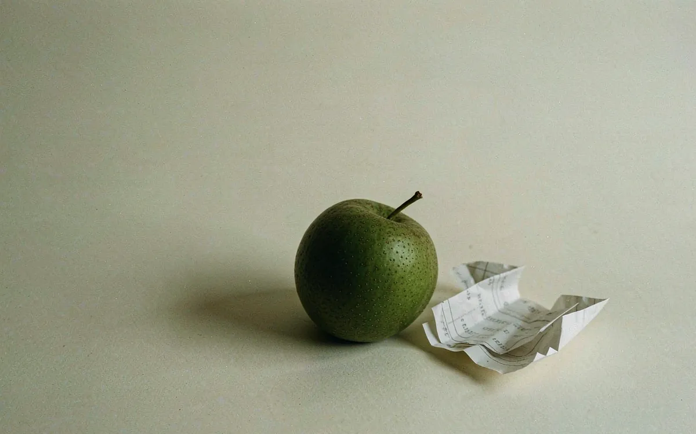

先说结论：如果不是为了孩子上学、落户，或者某种非它不可的安定感，纯从钱的效率算，现在买房不划算。
这话不好听，在饭桌上也会得罪人。所以下面只摆数，不讲立场。
一笔账：300 万的房子，30 年你要付出去多少
拿一套 300 万的房子举例。首付三成 90 万，贷款 210 万，按 4.2% 的利率、30 年等额本息，月供 1 万零 270。
30 年还完，本息合计 370 万，其中利息 160 万。再加上契税、维修、物业这些跑不掉的支出，算 30 万。
这套房子，总共付出去 490 万。
买下并还完：首付 90 ＋ 30 年本息 370 ＋ 税费维修 30
490 万
同样的 30 年一直租：每月 4000 元
144 万
按 300 万总价、首付三成、4.2%、30 年等额本息、月租 4000 元算，税费与维修按 30 万估。所有参数都是假设，换个参数结论会变。
同样的 30 年，如果一直租房，月租按 4000 算，总共付出去 144 万。
有人会说，房子最后还在你手上，租金付出去就没了。对。所以真正要比的不是 490 和 144，而是「490 万换回一套 30 年房龄的房子」和「省下来的钱，30 年后变成了什么」。
第二笔账：省下来的钱去哪了
每月少付 6270 元（月供 1 万零 270 减房租 4000），按月投出去，年化 6%，30 年后大约 630 万。
那 90 万首付如果不压进房子里，一次性投出去，同样年化 6%、30 年，是 517 万。
两边加起来 1147 万。而 30 年后那套房子值多少，我不知道；按不涨不跌算，还是 300 万。
这个对比有漏洞：租金会涨，6% 不保证，房子也可能升值。但漏洞的方向是对称的——它同样可能对买房更不利：房屋折旧、变现的时间、中途要换城市。我没有把天平压向哪一边，只是把平时不算的那一半也摆上来。
第三件事：切不开
房子最难的地方不是贵，是不能切。你要用 20 万，卖不掉 20 万的房子。
30 年里需要现金的时刻很多：失业、生病、家里人出事、一个必须抓住的机会。一套还在按揭的房子，在这些时刻不是资产，是负担——你不能卖，也不敢断供。
流动性这个词听起来很金融，说白了就一句：急用钱的时候，它能不能变成钱。
那什么情况下该买
三种。孩子要上学，学位是硬约束；打算在一个城市待二十年以上，且不打算再换；以及你确实需要那套房子带来的安定感，并且愿意为它付溢价。
这三种都不是财务理由。我不反对为这些东西付钱，我反对的是把它们包装成「投资」。
上面所有数字都是假设。4.2% 的利率、6% 的收益、4000 的租金，一个都不保证。换个参数，结论可能反过来。
我给的不是答案，是一套算法。你自己把参数填进去，算出来的才是你的答案。
这不是投资建议。
大部分人算收益，算得很细；算成本，只算手续费。
投资里最贵的那笔钱，是不出现在对账单上的那一笔。
费率是按比例收的，所以会被忽略；但比例乘上指数，就是 221 万。
一个百分点的重量
100 万，年化 7%，30 年，是 761 万。
如果每年扣掉 0.2% 的费率，实际年化变成 6.8%，30 年后是 720 万。
扣 1.5%，实际年化 5.5%，30 年后是 498 万。
年费 0.2%
年费 1.5%
200
400
600
800
0 年
10 年
20 年
30 年
720 万
498 万
100 万本金、年化 7%、30 年。两只产品唯一的区别是每年扣多少——扣的是比例，缩水的是指数。
0.2% 和 1.5% 之间，只差 1.3 个百分点。30 年之后，差了 221 万。
这就是复利的两面：它让钱长大，也让成本长大。费率是按比例收的，比例乘上指数，最后就是一个没法忽略的数。
而且这笔钱不会在任何一张单子上写「你今年付了 1.5 万」。它已经悄悄从净值里扣掉了，你看到的只是「涨得没别人多」。
三笔看不见的钱
第一笔，费率。 申购费、管理费、托管费、销售服务费，四个加起来才是真实成本。很多人只看申购费打几折，剩下三项从来不问。
第二笔，换手。 每调一次仓，都有摩擦：佣金、印花税、买卖价差。一年换五次，成本就翻上去了，而换来的那点「更优」未必存在。
第三笔，你自己的手。 这笔最贵，也最难承认。跌了恐慌卖出，涨了追进去，一年折腾三四回，收益被磨掉的部分，比任何费率都大。
所以我怎么做
三条，都很笨：
先看费率，再看业绩。两只看起来差不多的产品，费率差 1%，30 年后不是「差不多」。
能不换就不换。判断一次值多少钱，得先扣掉摩擦成本再算。
把钱分成两份：「五年不用」的和「随时要用」的。后者不投。
最后一条最难。大部分亏损不是因为选错，是因为在错误的时间被迫卖出。
这也不是投资建议。7% 的假设已经偏乐观，真实市场里 30 年不一定有 7%，也可能不止。
上面所有数字都是在同一个假设下做的横向比较，不是对未来的预测。它们只能回答一个问题：同样的起点、同样的年化，费用差一点，最后差多少。这个问题的答案跟市场无关，只跟算术有关。
这两年我用 AI 用得很凶。写东西、查资料、读代码、整理表格，能用的地方都用上了。效率是真的提高了，大概是三四倍。
但我慢慢发现一个规律：工具越强，人越容易放弃一件不该放弃的事——判断。
它给的答案，通常比你的更完整
完整不等于对。
一个写得顺、结构清楚、还带小标题的答案，会让人跳过「这个前提成立吗」这一步。你读着觉得有道理，就往下用了。而问题往往出在最开头那一句假设上，后面全对，只是因为起点偏了。
我自己踩过好几次：让它帮我算一个方案的成本，数字都对，但它默认了一个我根本没打算采用的口径。它不会提醒你「你这个前提有问题」，因为在它的视角里，那个前提是你给的。
三件不能外包的事
一是决定做什么。 提什么问题，是判断；回答这个问题，才是执行。问题提错了，答案再漂亮也是浪费。这件事它替不了，因为它不知道你想要什么，也不知道你承受得起什么。
二是承担后果。 它能给你三条建议，但半夜睡不着的是你。凡是后果要你担的决定，就不能把决定权交出去。
三是知道什么是对的。 这一条最要紧。它说这就是标准答案，你得有能力说「不对」。这个能力只能来自你自己读过、算过、错过的那些东西。
你提出一个问题
模型给出一份答案
你决定信不信
→
→
值得外包
也可外包
不能外包
提问题和拿答案是执行，判断信不信是决策。前两步可以外包，第三步外包出去，就没有人了。
我现在的用法
让它做三件事：把一堆资料整理成结构；把我写的东西改短、改顺；把一个我不懂的概念换三种说法讲到我能复述。
不让它做一件事：替我决定哪一版更好。
前者是加速，后者是替换。加速越多次，你的判断越值钱；替换一次，你就少一次练习。
工具越强，越需要一个人站在那里。那个人不能是模型。
周末看了马斯克和彼得·迪亚曼迪斯的一场对谈，今年一月录的，在德州那个超级工厂里。全长将近三个小时，我分了两天看完。
大部分内容你可以猜到。聊 AI、聊机器人、聊火星、聊能源。这些话题马斯克讲了十几年了，不算新鲜。
但有一段话我反复倒回去听了三遍。
有人问他，对现在的年轻人有什么建议。他说了一句很直白的话： 「不用上大学。大学只剩下社交价值了。」
以后每个人都会有一个 AI 私人导师，比任何教授教得都好。
然后他补了一句更狠的：
「别存钱养老。那没有意义。」
我当时以为他在开玩笑。他不是。
财富的基本单位，正在被拆掉重建
他说，未来十到二十年，财富的衡量方式会彻底改变。
今天我们用的货币，本质上是稀缺性的代理。但当一个 AI 加机器人可以无限生产商品和服务的时代到来，钱的稀缺性就会被拆掉。替代它的是两样东西： 能源 和 算力 。
谁掌握了更低成本的能源和更强的算力，谁就掌握了未来的「货币」。
这句话的逻辑链条是这样的：我们现在觉得钱重要，是因为大多数东西需要用钱去买，而钱的总量是有限的。但如果能源变得几乎免费，机器人可以 24 小时不停地把能源转化成商品和服务，那还有什么东西是稀缺的？
到那个时候， 一瓦特的电，比一块钱的钞票更有意义。
他说这个转折会在 2030 年 前后发生。不是科幻，是他从工程角度倒推出来的时间线。
AGI 今年就可能实现。到 2030 年，地球上 AI 的智力总和会超过全人类的总和。
这不是「可能」。是「正在」。
外科医生，还剩三年
然后他聊到了机器人做手术。
有人问他 Optimus 什么时候能上手术台。他说三年。
三年之内，地球上能做精细外科手术的 Optimus 机器人，数量会比所有人类外科医生加起来还多。 而且能力更强。
他说这件事的时候语气很平淡，像是在报一个项目排期。
但这句话背后藏着一个让我消化了很久的推论：连外科医生这种人类智力金字塔尖上的职业，都排在「被替代」的第三年。
那其他行业还剩几年？
三到七年：超音速海啸的过渡期
聊完这些之后，他给了一个时间窗口： 三到七年 。
这是他反复强调的一个区间。不是终点，是过渡期。他原话用的是：
「非常难熬的动荡期。」
短期内会有剧烈的阵痛。旧的职业在消失，新的还没长出来。社会结构、教育体系、退休制度——所有这些我们以为是「默认设置」的东西，都会在十年内被拆掉重建。
他形容这个过程是 超音速海啸。你没反应过来之前，水已经在头顶了。
看完这场访谈之后，我坐在那儿想了一会儿。
坦白说，我没办法验证他说的每一件事。2030 年是不是真的会那样？机器人三年后能不能做手术？能源经济到底什么时候来？这些我都不知道。
但他说的那几条底层的「线」，我越想越觉得方向是对的。
第一条：学历这件事正在烂掉。
不是大学本身的问题，是它的性价比已经崩了。花四年时间、几十万块钱，换来一张市场越来越不看重的纸。而另一边，一个会用 AI 工具的高中生，可以在三个月内做出以前一个团队花一年才能做的东西。
我自己不会写代码，但这几年用 Claude Code 和 WorkBuddy，效率比很多会写的人还高。不是因为我比他们聪明，是因为工具把门槛拆了。
以后用人单位不看你会什么， 看你用工具能做出什么。
第二条：别再盯着「存钱」这两个字了。
不是说现在就去挥霍。而是你得意识到，未来几十年财富的定义本身在变。如果你的全部安全感都押在银行存款和退休金上，你可能会发现到了那一天，这些数字买不到你真正需要的东西。
真正值钱的是什么？ 能产生价值的东西。能持续产生能源的东西。能在新体系里占据一个位置的东西。
第三条：接下来这几年会很颠簸，但别慌。
动荡不是末日，是换轨道。关键在于你别在旧轨道上死守。旧的职业定义、旧的教育路径、旧的财富观念——这些都不是真理，只是上一代人的临时方案。
临时方案过期了，就换。
最后，关于我儿子
我这几年一直在想，到底该给他准备什么。
不是钱。不是学区房。不是那个被卷烂了的起跑线。是让他在 AI 时代到来的时候，不是站在岸边发抖的那个人，而是知道自己能干什么的人。
这跟会不会写代码没关系。跟考第几名也没关系。跟有没有那张文凭更没关系。
有关系的是三件事：
第一 ，他能不能用 AI 工具把想法变成现实。
第二 ，他能不能在不同领域之间找到连接——技术、商业、人性、能源，不要求都精通，但至少不陌生。
第三 ，他能不能在所有人都慌的时候，稳住自己的判断。
这三条，我到现在也还在练。但我至少知道方向在哪了。
本文提及的访谈为 Elon Musk 与 Peter Diamandis 在 Moonshots Podcast #220 的对谈，2026 年 1 月 6 日录制于 Giga Texas。完整视频可搜索「Musk Moonshots Peter Diamandis」观看，已超过百万播放。
去年底我翻自己的豆瓣记录，发现一年读了 37 本书。
然后我问了自己一个问题：这 37 本里，有哪一本是我合上书之后，真正用它解决了一个实际问题的？
想了五分钟。答案是零。
不是书不好。是我读书的方式，本质上跟刷短视频没什么区别——信息流进来，流出去，中间什么都没留下。ChatGPT 帮我总结梗概，我匆匆浏览，以为自己懂了。实际上那些知识从来没有真正属于过我。
这件事让我很不爽。37 本书，按每本平均 4 小时算，差不多 150 个小时。150 个小时投入下去，产出是零。我当年在银行做理财经理的时候，绝对不会容忍一笔 150 个小时的投资回报率为零。
所以我开始琢磨一件事：有没有一套方法，读完一本书，就能用它解决一个真实的问题？
折腾了大半年，我拼出了一套三个工具配合的流程。拿我最近读的一本书当例子，把完整方法拆开来讲。
那本书叫《以日为鉴：衰退时代生存指南》。选它是因为我这半年一直在焦虑一件事：学历贬值。我做高校工作，每天看着一届一届学生考研、考公、卷学历，心里比他们还慌——因为我自己的硕士学历也在贬值。日本泡沫经济崩了之后走了三十年下坡路，我想看看那边的人是怎么熬过来的。
一年读 37 本不稀奇，稀奇的是合上书还能答上「这本书帮我解决了什么」。
第一步不是我做的，是 ChatGPT 做的：帮我选书。
以前我选书靠豆瓣评分和博主推荐，命中率大概一半。这次我把自己的困惑写成了一段话丢给 ChatGPT——不是"推荐几本好书"那种问法，而是说清楚场景：
我当下对社会发展节奏感到焦虑，担心学历贬值和过度追求稳定工作带来的风险，想借鉴日本泡沫经济后三十年的社会经验，找普通人的生存策略。请推荐 1-2 本匹配的书，说明理由。
它给了我这本《以日为鉴》。推荐理由写得很具体，对应了我的三个焦虑点。确定书名之后我就不再用 ChatGPT 了。后续的深度阅读，全部交给另一个东西。
第二步是阅读本身。我用的是一个叫 Socratopia 的工具。
说实话一开始我是抗拒的。我觉得读书就好好读，用什么工具。但试了一次之后发现，它不是替你想，是不停地问你问题，逼你自己想。
我把《以日为鉴》的 PDF 导进去，先告诉它我为什么读这本书：
在存量时代，怎么规划个人职业？怎么规避学历贬值和一味追求稳定带来的风险？
它没给我任何答案。它反问我：你当下最担忧的职业风险是什么？你之前对稳定工作、学历提升怎么看？你希望从这本书里拿到哪一类答案？
我回答完这些问题，阅读目标已经钉死了。以前我读书是"先读再说，读到哪里算哪里"，这次是带着一把刀进森林，只看自己要砍的那棵树。
接下来是最累的部分。Socratopia 会一层一层追问。我先说书里讲了日本经济下行后的结构性问题，它接着问这些问题对年轻人就业和学历选择造成了什么连锁影响。我把书里的几个核心观点串起来回答，它继续追问：哪些观点是全书反复强调的？哪些只是辅助案例？
在这个一问一答的过程里，我慢慢发现自己在剥离：把零散的历史案例、优美的金句全扔掉，只抓住一根知识主干。
日本泡沫破裂后，一味追求稳定会牺牲个人发展空间 学历扩招带来学历通胀，高学历不等于核心竞争力 铁饭碗不是永久安全的，会随着社会结构变化而收缩 这三条是我自己提炼出来的。没有人替我总结，每一个字都是被问到墙角之后自己想的。
第三步最让我难受：它开始质疑我。
我好不容易梳理清楚的核心逻辑，Socratopia 开始找茬。
你觉得不该追求稳定，那经济下行的时候完全放弃稳定去走高风险路径就一定正确吗？书里有没有提到稳定的合理边界？
我愣了。我确实只记住了"不要迷信稳定"这个结论，但没想过边界在哪里。
日本的社会环境跟我们不一样，书里的经验能直接照搬吗？
我又愣了。我一直在全盘接受作者的观点，从没想过适用条件。
这个过程持续了大概二十分钟。最后我修正了自己的理解：不是要拒绝稳定，是不能把稳定当唯一依靠。要在稳定之外打造可迁移技能。日本经验是预警参考，不是操作手册，得结合自己的行业来调整。
这二十分钟是整个阅读里最有价值的部分。以前我读完一本书，会觉得"嗯，有道理"。这次是"我知道它哪里对、哪里不对、哪里能用、哪里用不了"。
第四步是检验。我用的是抖音。
逻辑很简单：你能不能脱离所有资料，把学到的东西讲给别人听，讲得清楚？
我录了一条十分钟的视频，讲《以日为鉴》给我的三个核心警示。录的过程就发现有问题——有一个观点我说到一半卡住了，怎么都解释不清楚。说明那个地方我没真懂。
我又回到 Socratopia 重新啃那个知识点，再讲，这次通了。
这一步是照妖镜。你以为你懂了，一开口就知道了。嘴比脑子诚实。
阅读的终点是落地。我让 Socratopia 帮我生成了一份执行手册。
不是那种"建议你多读书多学习"的废话。是结合我的实际工作场景，把书里的理论转成三份东西：
个人决策准则。 不盲目投入学历提升、不单一依赖一份工作、主动打造可迁移的通用技能。每条准则下面标注了来自书里的哪一章哪一页。
场景检查清单。 遇到职业选择、要不要考研考公这些重大决策的时候，逐项对照：这个选择会不会让我陷入单一职业路径？有没有抗周期的能力？
三个月实践计划。 具体到每周干什么——梳理自己的可迁移技能、减少无效的学历投入、搭建副业收入来源。
手册打好之后贴在工位隔板上。不是装饰，是真的每周看。
这套方法我用了三个月，完整走了三轮。它不是"高效阅读法"，不是让你一年读 100 本书。正好相反——你可能一年只读了 5 本。但这 5 本里每一本的核心逻辑你都吃透了，每一个观点都变成了你决策系统的一部分。
用 150 个小时读 37 本什么都没留下，和用 150 个小时吃透 3 本改变三个决策。我选后者。
ChatGPT 帮我选书，Socratopia 逼我思考，抖音逼我面对自己是不是真懂了。三个工具各干各的，谁都不替谁。
如果你也想试试，不妨从一本你一直想读但没读透的书开始。不需要买任何东西——Socratopia 有免费版，ChatGPT 有免费额度，抖音你手机上就有。
唯一需要的，是你愿意坐下来，被问到墙角。
Socratopia：AI 学习工具
一个多月前发现的 Socratopia，用到现在，确实帮我提升了学习效率。
它不是搜题工具，不是听课平台，也不替你画重点、出摘要。它干的事特别简单：不给答案，只问你问题。
它怎么带我读完一本书
我在 Z-Library 下了几本日本经济的书，其中一本是《以日为鉴：衰退时代生存指南》。拖进 Socratopia，系统配了个伴学角色，叫鹿语萌。
对话刚开始，她直接甩过来一个大题：
「国家面临经济衰退，拼命保住每一家企业、每一个岗位，代价是什么？」
我当时回了句模糊的：效率低下呗。
她没评价对错，顺着往下追：「企业效率低下，最直接的表现是什么？本该怎么样，实际怎么样？」
我被问住了。硬着头皮往细了拆——激励机制没了，干好干坏一个样，谁还认真干活。
然后她又推了一步。假设一个场景：亏损企业靠政府输血续命，不让破产。这种企业还会花钱搞研发吗？我顺着往下推，结论是不会。她到这一步才引出书里的概念——「僵尸企业」。注意，概念是我自己推到嘴边的，不是她灌的。
接着她把问题放大了一圈：「全社会都是僵尸企业，会出什么问题？」
我从单一企业的问题，自己推出国家竞争力下滑、经济停滞。
她又扔出一个数据。1993 年日本设备投资额，比 1991 年少了 30%。问：缩掉的钱，本来该去哪？
我把「僵尸企业吸血」和「新兴产业研发投入不足」连在了一起。因果逻辑不再是一句话，是自己亲手推出来的。
东芝的案例来了。她问：东芝半导体工艺更新放慢，后果是什么？这条赛道上的对手是谁？我说三星。她继续追：三星 6 年反超，凭什么？
到这一步我已经被追了好几轮。自己总结出了一整条线：韩国国家扶持加接入全球产业链，对比日本研发停滞、资源被僵尸企业耗干。
最后她往社会层面收——「就业冰河期」，那些没被企业吸纳的年轻人去哪了？我从产业衰退，推导到普通人的一辈子。
一轮对话结束。书里那几章，我能用自己的话讲出来了。
不是背的。是推的。
为什么这套方法对我管用
底子是苏格拉底教学法。两千年前的笨办法。
老师不给答案。就拿一个问题接一个问题，把你逼到结论门口。门得自己推开。
我踢了十年球。这个感觉太熟了。教练从来不替你上场，他站场边喊，逼你跑位，逼你在那个瞬间做对的判断。有时候你真烦他。但下了场你清楚，没他那几下，你整场都跑不到该去的位置。
Socratopia 就是这教练。书是战术板。上场踢球的，是我自己。
在银行坐过 5 年，培训见太多了。台上的人往死里灌 PPT，台下的人往死里抄笔记。培训结束，该干嘛干嘛。被动塞进来的东西，转头就忘。自己推出来的，不走。
13 岁的孩子用，我觉得很对
官方推荐使用年龄是 13 岁左右。
我儿子马上读一年级。但我在琢磨，过几年他到了初中，能摸到这个工具，会不一样。
初中那几年，一个孩子最重要的变化不是学了什么，是开始有自己的思考方式。可现实是，课堂里的提问太少了。永远是老师问、学生答，倒过来的情况你几乎看不到。
一个初一的小孩，把历史课本、生物教材拖进去，被 AI 追着问「你觉得这事为什么会发生」「这两个现象之间有没有联系」——他不是在背答案，是在练思考。
提问这件事，本身就是能力。知道该问什么，比知道答案重要得多。13 岁开始练，不早，刚刚好。
我现在就这么学
想往深里啃一个领域，上 Z-Library 下几本好书，拖进 Socratopia，让它追着我问一下午。
学到的东西，是我自己推出来的。所以它待在脑子里不走。
这软件不画重点，不给答案，不出摘要。就拿一个问题接一个问题，把你心里那些自己都没意识到的思考，一点一点往外逼。
用过之后我觉得，愿意这么干的工具，实在太少了。
前几天看到一个视频。Dan Koe 的，标题很夸张：「用 AI 把学习速度拉到 10 倍」。
这种标题我一般会划走。但那天没有。视频开头他问了一个问题：你有没有发现自己学了很多东西，但生活一点都没变？
这个问题我太熟了。
我 2014 年大学毕业，进了一家国有银行做理财经理。五年。那五年里我学了基金知识、保险产品、KPI 考核体系、客户沟通话术、Excel 报表。每一样都认真学了。但五年之后，我对着一排 ATM 机，脑子里只有一个念头：这些东西学完了，然后呢？
然后我辞职了。
亲戚觉得我疯了。银行碗不要，去高校当一个合同制的辅导员，从零开始。那段时间我自己也说不清楚。不是想清楚了才走的，是先走了才慢慢想清楚的。
现在回头看，那个从银行到教育的转身，就是我人生里第一次「用中学」。
Dan Koe 的方法论拆开来看只有三步。
第一步：画出你不要的人生，再画出你想要的。
他说大部分人学习失败，不是因为不够努力，是没想清楚「我学这个东西到底要去哪」。
我做理财经理那几年，每天穿西装打领带，在柜台后面给客户讲年化收益率。表面光鲜。但我知道我不要什么。我不要那种「每天在 Excel 崩溃和咬肌抽筋之间反复横跳」的日子。我见过四十岁的同事是什么样，我不想变成那样。
那我想要什么？当时说不清楚。但有一件事是确定的：我喜欢跟年轻人待在一起。大学踢足球那几年，队里的师兄带过我，被前辈拉一把的感觉我一直记得。
所以我去考了教育学硕士。不是因为规划好了职业路径，是我先画出了「不要什么」，剩下的方向自己浮出来了。
Dan Koe 管这叫「人生地图」。名字有点大，说白了就一个问题：你现在站在哪，想走到哪。
第二步：别学了，直接做个项目。
Dan Koe 有句话我印象很深：「学习最好的方式不是先学再做，是先做再学。」
你有一个想做的项目，直接上手。遇到不会的，当场查。卡住了，问 AI。做出来了，你就学会了。全程没上过一节课。
我在资助管理中心工作的时候，面对几千份学生申请，光靠手工审核根本做不完。我以前在银行学过 Excel，但不是那种精通数据透视表的水平。我是那种「知道这玩意能帮我省钱但不知道咋用」的水平。
然后我就硬上了。
用 AI 帮我写 Excel 公式。用 Python 做数据清洗——我不会写代码，全靠 Claude Code 一行一行帮我生成。把足球比赛里盯人的逻辑套到困难生识别上。哪些学生从来不来申请？哪些看起来不符合条件但实际很困难？这些不是政策文件教我的，是做项目做出来的。
他管这叫「项目制学习」。我管这叫被逼出来的本事。名字不重要，原理是一样的：知识在你需要用它的那一刻，吸收效率是最高的。不是三倍五倍，是十倍。
第三步：教给别人。
最后一步最简单也最反人性。你学会了一个东西，试着讲给别人听。讲不清楚的地方，就是你没真懂的地方。
我 2018 年开始写公众号。最开始纯粹是自己整理投资笔记，后来慢慢变成写工作心得、写教育观察、写 AI 工具的使用体验。
写了一段时间之后发现一件事：写的过程帮我发现了自己哪些地方没想明白。
你以为你懂了。一动笔，第一段都写不顺。那好，回去重想。写到读者能看懂，才算真懂。这个过程反复了六年。我从一个不会写作的理财经理，变成了一个至少能把话说清楚的人。
费曼说教是最好的学。Dan Koe 说每周至少输出一篇教学文章。我没有刻意按任何方法来。我只做了一件事：把自己正在学的东西，写出来给别人看。六年，167 篇文章。这件事本身就是我的学习引擎。
这三个阶段串起来，不是什么神奇的公式。
就是一句话：想清楚你不要什么，然后直接动手做一件事，做完了把它教给别人。
我在不知道 Dan Koe 是谁的时候，已经把这三步走了一遍。辞职是第一步，用 AI 做项目是第二步，写公众号是第三步。每一步都不是计划好的，但每一步都踩在这个逻辑上。
现在回头看，那个在银行柜台后面迷茫的自己，并不是缺乏学习能力。他是缺一个非学不可的理由。
项目给你理由。教学给你检验。人生地图给你方向。
这三样齐了，你不需要「坚持学习」。学习会变成你解决问题的副产品。
#
一个人晚上快十点下班，在地铁上刷到大学同学在海外度假的照片，他面无表情地划过去。回到家，孩子作业还没写完，妻子说辅导班又要续费了。他坐在沙发上，没来由地吼了一句：
“你就不能盯着他写完吗？”
吼完自己也觉得不对劲。不是今天太累，是最近经常这样。一点小事就炸。
但如果把镜头拉远一点看这个人的处境，会发现一件残忍的事： 他的脾气，跟他这个人关系不大，跟他每天的活法关系很大。
我们这一代人，小时候被灌输的模板很简单：好好读书，找份稳定工作，努力工作，日子就会一天天好起来。
这个模板曾经有效过。它的背后有一个隐藏前提—— 你出售的时间，会随着年龄和经验增长而不断涨价 。一个工程师干了十年，他的时薪应该是刚入职时的好几倍。一个会计干了二十年，她的判断比年轻人值钱得多。
在那个时代，直接出售时间，虽然是被动的，但不至于绝望。因为你知道自己在积攒溢价。
但现在不一样了。
一个刚毕业的大学生送外卖，一单四块钱。一个四十岁的人如果也去送外卖，一单还是四块钱。他的体力可能还不如年轻人，接单量更低，跑得更慢。年龄不但没有带来溢价，反而变成了减分项。
更残酷的地方在于，这不是外卖行业的特例。大量白领岗位也在经历同样的变化——新工具出来，年轻人三个月就能完成一个老员工靠熟练度积累起来的技能。经验不再是溢价，经验变成了路径依赖。
这个人每天上班，把自己的八小时、十小时、甚至十二小时直接卖掉，换回一份勉强应付房贷和补课费的薪水。他的时间单价，十年来几乎没有涨过。甚至因为行业不景气，实际购买力还在下降。
他当然焦虑。但焦虑还不是戾气。戾气是在焦虑上叠加了一层 “完全不知道该怎么办” 。
《财富的真相》里讲过一个类比：时间就像一块泥巴。你直接把泥巴卖了，只能卖泥巴的钱。但如果把泥巴做成砖头，砖头比泥巴值钱。如果盖成房子，房子更值钱。
直接出售时间，就是卖泥巴。打工、做小时工、跑外卖、跑网约车，本质上都是在卖泥巴。这不是说这些工作不辛苦，恰恰相反，它们非常辛苦。但辛苦和收益不成正比的最大原因是—— 你没有任何“加工”的余地 。你的时间一秒钟也分不出来做别的事，因为你所有的时间都已经用于换下一顿饭了。
这个机制是闭环的：
你想摆脱直接卖时间 你需要学习 你要学习 你需要时间 你要有时间 你不能把所有时间都卖掉 但你不把所有时间都卖掉 你下个月的房贷还不上了 于是你只能继续卖。
卖到最后，你的所有精力都被榨干。你下班后只想瘫着，你已经没有力气去学新东西、去思考自己的商业模式哪里出了问题。你甚至不知道“商业模式”这个词跟自己有什么关系。
这就像一个困在笼子里的人，发现笼子不仅坚固，而且锁已经生锈了。他想出去，但钥匙在哪里他不知道——因为他根本不识字，笼子外面挂着的使用说明书他看不懂。
更让人绝望的是，这个笼子，很大程度上是他自己亲手焊死的。
他当初选择了一份稳定但不学习的工作，因为那会儿工资还可以。他没有想过自己在出售时间而不是生产产品。他以为只要熬资历就能涨工资。他被“稳定”这个词骗了很久。
等他反应过来的时候，他已经四十岁了。房贷还剩十五年，孩子还在上学，父母开始需要照顾。他已经没有可以用来试错的余量了。任何一次转型失败，都意味着整个家庭几个月的现金流断裂。
所以他只能继续待在这个笼子里。
他每天上班，忍受那些早该反抗的不合理要求，因为他没有议价能力。他看着网络上那些年轻人在讨论“FIRE”“数字游民”“副业刚需”，他觉得那些词离自己特别远。不是他不想，是他连开始的第一步都迈不出去——因为第一步也需要时间和心力，而他已经被掏空了。
当这种状态持续几年之后，一个人的心理会发生一种可怕的变化。
他开始变得易怒。不是因为他天生暴躁，而是因为 他的每一次退路都被堵死了 。以前跟领导吵架，大不了换一家公司。现在他不敢。他的简历递出去要么石沉大海，要么开出的薪水比现在还低。他的每一次忍让、每一次压抑，都不是因为他想通了，而是因为他没有选择。
没有选择的人，最容易发火。因为发火是他为数不多还能控制的出口。
孩子考试没考好，他吼。老婆多买了一箱牛奶，他嫌贵。路上被人加塞，他摇下车窗骂。这些火看起来没道理，但真正的原因不在这件事上，而在他觉得自己的人生正在失控，而他什么都做不了。
他既没有办法改变现状，也没有办法接受现状。两头都够不着，就卡在中间，变成一团易燃易爆的气体。
这就是所谓的中年人戾气。
它不是性格问题。它是一个人在发现自己亲手焊死了自己的出路之后，那种 “无可奈何的出离愤怒” 。
残忍的地方在于，他并不是不努力。他比很多年轻人都努力。他只是从一开始就选了一个对自己最不利的模式，然后被困在里面，再也没有出来过。
他不是不知道要学新东西。他只是很清楚，学习也需要成本，而他最缺的，恰恰不是道理，而是可以重新开始的余量。
为什么现在的小孩放学后补习到半夜十一点，考上的大学似乎并没有比三十年前每天下午五点放学的孩子更好？
我们从小被灌输一个常识：努力追求个人利益的最大化，结果是对所有人都有好处。这大概来源于亚当·斯密的“看不见的手”。只要面包师想赚更多钱，他就会努力烤出更好吃的面包。他赚到了钱，我们吃到了好面包。世界因此进步。
听起来很完美。所以我们顺理成章地认为，只要每个学生都拼命念书，每个人都拼命加班，社会就会变得更好。
但这套逻辑里藏着一个漏洞。
你可以试着顺着常识往下想。为什么大家要补习到半夜？因为隔壁的邻居去补习了。为什么邻居补习我们就得补习？因为好学校的录取名额是固定的。为什么看不见的手在这里失灵了？因为烤面包是在创造新的价值，而抢学校名额仅仅是在争夺排名。
这就引出了一个很古老但常被忽略的概念。有人叫它达尔文陷阱。
想象一下我们坐在电影院里看电影。第一排的人为了看得更清楚，决定站起来。对他个人来说，这个决策非常理性，因为他确实挡住了后面的人，自己获得了毫无遮挡的视野。
为了不看别人的后脑勺，第二排的人也只能站起来。很快，像水波一样，全电影院的人都站着了。
现在算一算总账。每个人都站得腰酸背痛，耗费了成倍的体力。但没有任何一个人比原本大家坐着的时候看得更清楚。大家只是花了巨大的代价，买回了原本免费的东西。
竞争在这里不等于进步。它变成了一种集体的磨损。
你可能会觉得不对，竞争明明带来了科技进步。你看各个厂商互相拼杀，我们的手机才越来越好用，人类就是这样向前的。
我猜想这里面的区别在于我们在争夺什么。竞争似乎分两种。一种是创造绝对价值的竞争，比如你发明了更好的屏幕，他写出了更快的算法。蛋糕被做大了，所有人都在获益。
但我们生活中遇到的大多数令人疲惫的竞争，往往是另一种：地位竞争。为了比同龄人看起来更体面，你跟着买最新款的设备；为了在简历上压过别人，你去考一个其实用不上的证。这种时候，我们争夺的不是“好东西”，而是“比别人好”。
当一个系统里的所有人都在玩“比别人好”的游戏时，系统本身就不再产出新东西了。所有的能量都用来抵消别人的能量。就像两台互相发送垃圾数据的服务器，CPU都在全速运转，发出了巨大的轰鸣和热量，但毫无输出。
要在坐满人的电影院里看清屏幕，最理性的做法也许不是跟着站起来。我们可能得回头看看，是不是非得看这场拥挤的电影不可。
发现一个奇怪的现象。现在很多人聊起自己的工作，语气里总带着点隐蔽的歉意。
只要这份工作没能“改变世界”，没能“实现自我”，仅仅只是为了每个月换取一笔交房租的钱，他们似乎就觉得自己搞砸了什么。什么时候开始，靠双手赚钱养活自己，变成了一件需要心虚的事？
我们是怎么走到这一步的？大概是因为过去二十年，社会给我们安装了一套叫作“寻找热爱”的思想补丁。学校的演讲、网上的爆款文章都在暗示：你不仅有权利，而且有义务去找到一份充满意义的工作。
为什么大家会觉得这种说法是对的？因为在经济高速扩张期，机会一直在溢出。那时候连发个传单都能被包装成“地推营销专家”。潮水上涨的时候，所有的职位看起来都闪烁着通向未来的光芒。
但这为什么是一个巨大的逻辑漏洞？
你仔细去看社会运转的底色，其实是极其机械和乏味的。百分之九十九的工作，本质上都是维护性的。水管坏了需要人修，数据乱了需要人填，汉堡冷了需要人送。市场本身根本就提供不了那么多“既能糊口、有前景，又能实现自我”的岗位。
你可以再往下想一层。当市场明明给不出这些岗位，却又通过各种叙事让大家深信自己“理应拥有”时，会发生什么？
人的心理防线就会崩溃。
这其实是一种非常隐蔽且残忍的结构性骗局。它把宏观经济周期里的岗位萎缩，悄悄转化成了普通人的个人失败。你找不到有意义的工作，不再是因为大环境变了，而是因为你不够独特、不够优秀。你的痛苦，成了一种必须由你自己买单的道德缺陷。
我们可以换个角度来理解这件事。
在软件开发里，有一个很重要的原则叫“低耦合”。意思是一个代码模块最好只干一件事，不要和其他模块产生太多复杂的绑定。
我们现在对工作的期望，就是一种灾难性的“高耦合”架构。我们要求“工作”这个单一模块，必须同时承担赚取口粮、社交认同、心理治疗和输出人生意义的功能。一旦外围环境波动，工作出了问题（比如遭遇裁员），整个操作系统的底层逻辑就跟着一起全盘死机。
如果我们把架构解开呢？
工作其实就是一个极其简单的API接口：你输入时间和劳动，系统返回货币。接口调用完成。就这么干净利落。
至于“意义”和“自我实现”，这些属于另外的独立模块。你可以去周末的菜市场里找，去自己组装一台书架的过程中找，或者去朋友毫无逻辑的闲聊中找。没必要非得把它们硬塞进写字楼的工位里。
你可能会说，世界上确实有人把爱好变成了工作，每天活得热血沸腾，连轴转也不觉得累。
我猜想确实有这样的人。但那往往是极少数的运气，是统计学上的异常值。就像总有人会买彩票中头奖，但我们不能把“买彩票中大奖”写进义务教育的生存指南里。把异常值当作默认配置，是这代人绝望的源泉。
当幻象破灭，生存博弈变得越来越具体而微。如果你明天早上能按时醒来，去完成那些你并不喜欢但必须去做的任务，然后在月底用自己赚来的钱付清账单，买一兜新鲜的番茄。
你不需要向任何人道歉，也不需要觉得这叫作平庸。在这个时代，能把这套基础程序稳稳当当地跑通，就已经是属于普通人的英雄主义了。
我观察到一个深刻的转变，它尚未被许多人完全领会，却正在静默地重塑价值的根基。这个真相是：我们长期以来珍视并磨练的技能“表现层”，其价值正在迅速消融，而那驱动一切创造的“生成力的深层结构”，正成为未来版图中唯一真正稀缺的宝藏。
这意味着什么？
意味着你曾倾注十年心血，学习如何捕捉光影的精髓拍出一张动人的照片，如何构思布局呈现一个和谐的页面，如何渲染光影构建一个逼真的场景——所有这些外在的技艺形态，那些“如何做”的答案，正被大模型以一种近乎漠然的效率廉价地复制。它无需灵感的沉淀，不依赖情绪的起伏，仅凭一行指令，就能瞬间涌现出你过去视为壁垒的“技艺”成果。
然而，在这令人惊叹的技术图景之下，隐藏着一个更本质的现实：
如果你安身立命的根本，仅仅在于“做得像”或“做得好”这个层面，那么你将永远处于追赶者的位置。大模型会比你更快、产出更多、成本更低。这不是简单的效率提升，这是一场无声的、触及价值核心的“深层洗牌”。
我们过去习惯于认为，摄影师的卓越在于构图，设计师的非凡在于审美。但这只是表象。他们真正的力量，源于他们选择看见什么、内心关切什么、渴望表达什么。 “拍照”或“设计”，不过是他们内在意识借以显化的特定媒介。
如今，媒介本身正在经历巨变。大模型在“表达手段”的效率上超越了我们，但这并非终点，反而将人类推向了一个无法回避的本源问题：
你是否拥有真正属于你自己的“表达动机”？那个驱动你去创造、去发声的内在源头是什么？
我们正步入一个“一切技能皆可被调用”的时代。然而，这个强大的工具世界，最终将只服务于那些拥有“生成意志”的人。
这意志并非指向外在的功成名就，而是源自内在的驱动力：
• 你内心深处无法抑制的悲悯； • 你面对不公时涌起的正直愤怒； • 你对世界细微之处的独特敏感； • 你那不被世俗磨灭的好奇心…… 这些无法被量化、无法被算法完全捕捉的内在品质，这些深刻的意识状态，才是最终的“非通用能力”。
它们不是从匮乏和恐惧出发去“证明”什么，而是从丰盈和真诚出发去“是”什么。
所以，我所见的深刻真相是：
AI的爆发，并非简单地导致失业，它更像是一场深刻的“脱壳”——迫使我们从依附于某种外在身份（技能、职业）的状态中剥离出来。你不能再仅仅依靠“你会做什么”来定义自己，你必须依靠“你是谁”来安身立命。
这就是为什么，越是身处AI浪潮之中，我们就越需要向内探寻：
当外在的技能趋于通用，你灵魂深处那独一无二的、无法被复制的“非通用性”，究竟在哪里？那份源于你独特意识的、真正想要表达和创造的东西，是什么？
找到它，安住于其中，并让它自然流淌。这，或许才是通往未来真正自由与创造的唯一路径。
#人工智能 (Artificial Intelligence / AI) #技能贬值 (Skill Devaluation) #价值重塑 (Value Shift / Reshaping Value) #内在意识 (Inner Consciousness / Awareness) #生成力 (Generative Power / Creativity) #表达动机 (Expression Motive / Creative Intent) #非通用能力 (Non-Universal Ability / Unique Capability) #深度思考 (Deep Thinking) #个人成长 (Personal Growth) #未来趋势 (Future Trends) #存在价值 (Value of Being / Existential Value)
人们对待当下的 AI 浪潮，就像在对待一场没有尽头的跑轮测试。大多数人要么在焦虑地追踪最新的巨型模型，要么在疯狂地学习下周可能就会过时的工具技巧。
但这是一种极其低效的策略。新工具的半衰期太短了。
如果你去观察那些在历次技术变革中真正获益的人，会发现他们不在乎零散的坐标，他们在画一张地图。你需要的是一套认知框架，一套能把工具、职业、产业甚至人文思考串联起来的系统。
只有拥有这张地图，你才能在剧变的时代找到自己的锚点。
在自己硬盘上跑模型的那晚，桌面大概就是这个样子。
1. 夺回技术的控制权
构建这张地图的第一步，却恰恰违背了我们当下的直觉：你必须先把技术的控制权从巨头手里拿回来。
我是在调试本地 AI 知识库时意识到这一点的。
过去几年，我们潜意识里接受了一个设定：智能是一种像自来水一样的公共设施。你只要接上云端，就能源源不断地获取它。作为交换，我们把所有的家当、资料、思考痕迹，全都放进了别人家的保险柜里。理智告诉你这存在隐患，但便利性让你选择了妥协。
把所有资料和思考痕迹放在云端，意味着我们在用隐私交换便利。
但本地 AI 知识库完全不同。它让人联想到个人电脑（PC）诞生初期的那种极客精神。
2. 本地 AI 的罕见确定性
当你关掉网络，打开像 Cherry Studio 这样的客户端，在自己的笔记本硬盘里跑起一个小参数模型（比如 Qwen3）时，那种震撼是非常强烈的。
它虽然小，但工具调用、多模态功能一应俱全。在这个干净利落的本地环境里，你的模型拥有了一个确切的身份标识。这串在系统里看似毫无意义的乱码，意味着一种罕见的确定性：
隐私安全：数据全在你的硬盘里，完全不用担心隐私 极速响应：秒出结果，没有任何网络延迟 彻底自由：你想怎么调就怎么调，获得了彻底的自由 3. 知识方式的底层重构
当本地大模型的能力与你的个人知识体系深度绑定时，它就不再是一个简单的工具了。你的工作文档、学习笔记、项目资料，全部可以通过自然语言直接对话。
这就好像你给自己配了一个 24 小时待命的超级助理。
它知道你所有的工作细节，知道你上周那个方案放在哪个文件夹，知道你三个月前做过类似的项目。而且，最重要的是，它只耗电，你再也不需要为思考的过程支付任何“计件工资”。
想象一下，你脑子里的每一个想法原本都是散落的纸片。嵌入模型所做的，不是帮你建立一个索引目录，而是给你的每一张纸片分配了一个极其精确的数学坐标。
当你向这个本地 AI 提问时，它不再像传统的搜索引擎那样傻傻地去匹配关键字。它是直接飞到那个高维空间的坐标附近，把相邻的、逻辑上高度相关的想法一把抓起来。
从被动检索到主动对话，从碎片化信息到结构化知识网络。这真的是知识工作方式的一次底层重构。
4. 智商与上下文的博弈
你可能会说，本地的小模型太笨了，它比不上云端的千亿参数巨兽。
这似乎是事实。但这里有一个容易被忽视的细节：
在处理个人的生活和工作时，上下文比原始智商重要得多。
一个智力普通但完全掌握你所有背景的助理，远比一个绝顶聪明但每次都要你从头解释一遍的云端专家要有价值。
5. 时代的终局与分水岭
我们总以为技术的终局，是全人类都在访问同一个无所不知的云端上帝。
但我猜，真正的未来可能恰恰相反。它可能看起来更像 1970 年代末微型计算机取代大型机的那个时刻—— 每个人都在自己的硬盘里，耐心地喂养和调试着一个只属于自己的智能体。
当那一天到来时，数字世界里最大的分水岭，或许不再是“用 AI 的人”和“不用 AI 的人”：
而是“租用大脑的人”，和“拥有大脑的人”。
一、效率的错觉：当书本沦为检索库
人们正在把书变成效率低下的检索库。找个人工智能把几百页纸压缩成三条要点，扫一眼就觉得自己掌握了精髓。这听起来无懈可击。花三分钟拿到现成答案，总比熬上三十个小时划线做笔记显得聪明。
这种错觉其实是长期应试教育留下的后遗症。上学时我们被训练成答题机器，衡量聪明的标准是你记住了多少标准答案。既然现在的机器能在一秒钟内吐出所有正确的结论，自己苦哈哈地去啃大部头，看起来就像是坚持用算盘计算轨道参数一样可笑。
二、知识的伪装：便利贴与神经回路
问题在于，事实和结论根本算不上真正的知识。
当你直接吞下别人咀嚼过的结论时，你的大脑里根本没有长出支撑这个结论的神经回路。你只是把它像一张便利贴一样啪地贴在脑门上。风一吹，或者遇到稍微复杂的现实情况，这张纸条立刻就飞了。
拿编程来打比方，我们可以清晰地看到两种认知获取模式的本质区别：
认知模式 编程隐喻 运作逻辑与现实后果 获取提纯信息 封装好的执行程序 别人喂给你的精炼知识就像是已经封装好的执行程序。你可以直接双击运行它，处理手头的小麻烦。但你摸不到它的底层逻辑，也无法修改它。只要外部环境稍有变动，程序报错崩溃，你就只能干瞪眼。 进行深度阅读 最原始的代码 自己去读书，去死磕那些晦涩的概念，则是拿到了最原始的代码。你得用自己的大脑去重新编译它。
三、阻力即机制：阅读的真正价值
这个重构的过程绝对不舒服。你会卡壳，会停下来发呆，会用自己踩过的坑去反驳作者。但这恰恰是最关键的一步。
思维拼接： 阅读那些厚重纸页的过程，强制你把独有的经历、残缺的心智模型，和作者的思维纹理强行拼接在一起。结构性重塑： 读书的根本价值与你最后背诵的几句金言毫无关系。那漫长的几百页阅读过程中，你的大脑为了消化信息而产生结构性重塑，这才是重点。核心机制： 阻力本身就是核心机制，它绝非某种设计失误。四、工具的边界与未来的鸿沟
当然，经过提纯的信息并非毫无用处。如果你只是需要查阅某个软件的接口文档，或者搞清楚某场战役的具体年份，用机器直接提取信息无疑是最高效的。谁也不会闲得去深读一张冰箱说明书。
但对于那些真正用来塑造我们认知世界的思想，走捷径就是在自我阉割。
如果你习惯了只吞咽那些被预先咀嚼过的残渣，智力的消化系统迟早会彻底退化。我怀疑未来社会最大的分层，根本不取决于你用不用那些聪明的算法工具。真正的鸿沟，将横亘在：
那些依然保留了从原始代码构建认知能力的人； 与那些大脑里只装满别人写好的执行程序的躯壳之间。
原文来自 DAN KOE，本文为逐句精翻，与原文一一匹配
#

社会长期灌输给我们一种错觉：兴趣庞杂是一种软弱的表现。上学，拿学位，找工作，然后在某个节点退休。然而，这套按部就班的人生剧本，早已漏洞百出。
我们早已告别了工业时代。如今，死守单一技能无异于自取灭亡。想必大家此刻已深有体会，这种机械僵化的生活、画地为牢式的学习，对心智与灵魂的侵蚀何其剧烈。
人们隐约感觉到，我们正置身“第二次文艺复兴”的浪潮之中。在这个时代，你的好奇心与求知欲本应是最大的竞争优势，但似乎总感觉缺了点什么。
很长一段时间里，我学而不倦，却深陷“教程地狱” （Tutorial Hell，指沉迷看 教程却不动手实践）。有人可能会说这是 “新奇事物综合征”（Shiny Object Syndrome），批评你缺乏定力。
诚然，我从“感觉自己变聪明”中获得了廉价的多巴胺，但生活并没有实质性的改变。老实说，我感到自己正在掉队。大学期间，我尝试过无数方向。我曾梦想做自己的事业，靠某种创造性的工作谋生……但在花了五年时间“学习”之后，残酷的现实摆在面前：
为了生存，我不得不去谋求一份仅能糊口的“好工作”。
缺失的那块拼图，是一个“载体”。一个能让我将所有兴趣注入其中，转化为有意义的工作，并以此获得体面收入的载体。
如果你曾因无法只专注于一件事而感到愧疚； 如果你在思维渴望开疆拓土时却被告知要“垂直深耕”； 如果你曾怀疑是否有一条路，能让你免于重蹈周围人眼中那种痛苦的覆辙…… 那么，现在就是活着的最好时代。
以下是我能想到的七个最振聋发聩的观点。我们将首先探讨为什么“多重兴趣”在当今世界是一种超级能力，随后我会提供切实可行的步骤，帮你将其转化为毕生的事业。
我们要谈的内容很多，希望你已整装待发。
一、个人成功的三大要素与专家的消亡
“一个人如果终生只操作几种简单的动作……往往会变得愚蠢无知，堕落到人类心智的底线。” —— 亚当·斯密 (Adam Smith)
斯密先生，您这番话颇具讽刺意味，因为正是您亲手塑造了这群人，而我们至今仍在承受其苦果。
工业化时期，专业化之所以大行其道，是因为（以大头针工厂为例）一个工人如果包揽所有工序，一天只能造 20 枚大头针；而一旦分工，每人只负责一步，产量就能飙升至 48,000 枚。于是，我们围绕这一模式构建了整个世界。
人类沦为朝九晚五的流水线零件。坦率地说，因为政府不再以国家利益为先，而在谋求自身私利；企业也不再服务于员工利益，而在追逐自身利润。学校的设计初衷正是为了服务于这种利益。它们的唯一目的，就是批量制造守时、听话的工厂工人。
但这绝非生而为人的生活方式。
如果你追求专业知识仅仅是为了让自己永远无法掌控全局——尤其是无法掌控属于你自己的事业——那么你大可继续依赖学校给你教育，依赖工作给你发薪水。你大可继续被诱导着相信“专业化是人类价值的核心”，尽管现实已经无比清晰：
这个系统并不需要特定的“你”来执行那个任务。
分水岭正是在此。如果纯粹的专业化使人愚钝且依赖他人，那么是什么让一个个体变得聪慧且独立自主？答案是三大要素：
1. 自我教育 (Self-education)
显而易见：如果你想获得不同于传统教育的成果，就必须主导自己的学习路径。
2. 理性自利 (Self-interest)
这个词往往引人侧目。它听起来自私短视，许多人未加思索便将其视为恶德。但它仅仅意味着“关注自身的利益”。
唯一的替代选项，就是像我们刚才讨论的那样，去服务于那些构成社会的庞大组织的利益。换句话说，追随你的兴趣吧，因为取决于你的认知与道德发展水平，你的兴趣完全可以以一种无私的方式造福他人。（注：沉溺于短暂的快感和廉价多巴胺通常并非你的利益所在，那是靠你的无脑消费获利的大公司的利益。）
在 安·兰德 (Ayn Rand) 看来，真正“自私”的人，是一个自尊、自立的人，他既不为自己牺牲他人，也不为他人牺牲自己。这种态度既拒绝做掠夺者，也拒绝做受气包。
3. 自给自足 (Self-sufficiency)
这是拒绝外包你的判断力、学习力和行动权。如果说自我教育是引擎，理性自利是指南针，那么自给自足就是基石，防止你的人生航向被外部力量劫持。
三者协同运作，而非相互依赖。“通才” (The Generalist) 正是从这一三角关系中自然诞生的：
理性自利激发自我教育： 你学习是因为这真正有助于你的蓬勃发展，而不是因为那是谁布置的作业。自我教育促成自给自足： 你只有在自己理解的领域，才能拥有真正的主权。自给自足厘清理性自利： 当你不再依赖他人的解读时，才能真正感知什么在服务于你。大多数人发展多种兴趣是为了逃避工作。而当你的兴趣成为你的工作，甚至是你毕生的事业时，大部分无关紧要的兴趣就会自然被过滤掉。
纵观每一个我们真正钦佩的 CEO、创始人或创作者，你会发现他们都是 通才 。他们懂营销，足以指导方向；懂产品，足以构建模型；懂人性，足以领导团队。更重要的是，他们明白跨领域的思想可以互补，从而构建出一种独特的看待世界的方式。
二、你正身处“第二次文艺复兴”，请把握机遇
“学习科学的艺术，研习艺术的科学。开发你的感官——尤其要学会如何去‘看’。要意识到，万物皆相连。” —— 列奥纳多·达·芬奇 (Leonardo da Vinci)
在我看来，终极的“护城河”，或者说最后值得为此付费的竞争优势，是一个 观点 。一个只有你能看到的独特视角，因为它是由你独一无二的人生阅历铸就的。这可能是世上最后一样无法被他人复制的东西。
既然这一点亘古未变，为什么不现在就将其置于首位？尤其是当自动化大潮已兵临城下之时？但如何将其置于首位？如何发展它？
答案是： 追求多种兴趣，并用它们构建作品。
你看，你探索过的每一个兴趣都会留下痕迹。每一个兴趣都增加了潜在连接的数量。每一个兴趣都扩展并提升了你建模和解释现实的复杂度。你的现实模型越复杂，你能解决的问题、你能洞察的机会、你能创造的价值就越多。专业主义会彻底阻断这一过程，而你所谓的“新奇事物综合征”其实一直都在试图告诉你这一点。
从出生到现在，你正在培养一种旁人无法具备的观察世界的方式。一种 AI 只有在你指令它“思考”时才能模拟的方式。
修读过心理学和设计的人 ，看待用户行为的视角与纯粹的设计师截然不同。研习过销售和哲学的人 ，达成交易的方式与纯粹的销售员大相径庭。深谙健身与商业的人 ，能建立起 MBA 们无法理解的健康产业公司。你的优势，更多在于“交叉点”，而非单一的专业知识。这正是我们在文艺复兴时期看到的模式，如今它正以更强劲的势头回归。
在印刷术诞生之前，知识是稀缺的。印刷机是新型人类诞生的催化剂。这种人可以学习任何事物，结合一切元素，并创造出任何专家都无法逾越的杰作。
三、如何将多种兴趣转化为一种利润丰厚的生活方式
至此，我们已达成几点共识：
你兴趣广泛，但感到无法无休止地学下去。 你热爱基于兴趣的自我教育，但不得不从职业生涯中挤出时间来做这件事。 你明白“自给自足”的必要性，但感觉自己尚未具备值得市场付费的价值。 你需要快速适应，因为我们不知道未来的工作形态会变成什么样。 那么问题来了： 我们如何将所有这些整合进一种生活方式中？ 我们如何将“学习”与“赚钱”结合成一份真正的工作？
想靠你的兴趣赚钱，你需要让其他人也对它们感兴趣。你需要一种让他们付钱给你的方式，这通常意味着你需要销售一个产品。
注意力是最后的护城河之一。 当任何人都能开发任何软件时，谁会赢？答案是：那些被人们熟知的人。你需要成为一名 创造者 。
我的意思是，要停止因为需要薪水而为别人创造，解决之道是 为你自己创造 。
将社交媒体视为一种机制，一种将你的兴趣展示在他人面前的机制。它是从事独立工作这块拼图中的一环。此外，这涵盖了我们所有的基础：
你热爱学习？ 将其重构为“研究”，现在这名副其实地成了你的主业。你需要自给自足？ 你需要一家企业来实现这一点，而每家企业都需要吸引客户。你需要能够适应？ 你可以像构建新产品一样快地向你的受众发布它们。四、如何将你自己变成一家企业
不幸的是，“创业”和“商业”已沦为被污名化的词汇。现实是，创业是我们的天性，是现代社会的生存技能。我们生来就要创造价值，并将其分发给志同道合的部落。
此外，准入门槛已经崩塌。你真正需要的只有一台笔记本电脑和网络连接。现在，你可以选择两条路开始：
路径一：基于技能 (Skill-Based)
这是长期以来主导互联网的模式。你“学习一项可变现的技能”，通过内容教授这项技能，然后销售相关的产品或服务。局限性在于专家的局限性，它是单维度的。
路径二：基于成长 (Development-Based) —— 推荐
目前赢面最大的创作者，是那些无法被钉在某个单一细分领域的人。他们关注四大永恒市场： 健康、财富、关系、幸福 。
他们追求自己的目标（品牌）。 他们教授他们学到的东西（内容）。 他们帮助他人更快达成目标（产品）。 做你自己。 只是要在一个你的工作能被发现、关注和支持的地方。在当下及可预见未来，这个地方就是互联网。
五、品牌是一种场域
别再把你的品牌仅仅看作头像和简介了。
品牌是一个人们以此获得转变的场域。 品牌是你邀请他人进入的小世界。 品牌是读者在关注你 3-6 个月后，脑海中沉淀的思想总和。 换句话说： 你的品牌就是你的故事。
花一天时间写下你的来路、你生活中的“至暗时刻”、你拥有的经历和获得的技能，以及这些东西是如何最大程度帮助你的。当你构思观点、内容或产品时，你应该通过你的故事来过滤它们。
六、内容即新颖的视角
互联网是信息的消防水龙带。AI 正在制造更多的噪音。这意味着信任和信号（有效信息）比以往任何时候都重要。在我看来，你内容的指路明灯应该是： 将最好的思想策展到一个地方。
第一步：建立一个“灵感博物馆”
你需要一个能在灵感闪现时立即记录的地方。这是一个关键习惯。每当你发现一个有用（无论是现在还是不久的将来）的想法，记下来。你策展的想法只需对你重要即可。
第二步：基于“思想密度”进行策展
最高密度的信息源通常包括：
古老或鲜为人知的书籍 ：这里居住着不受潮流影响的永恒原则。策展类博客、账号或书籍 ：如 Farnam Street 等资源为你做了大量的繁重工作。重磅社交账号 ：发现那些总是发布伟大思想的源头。第三步：将一个观点用 1000 种方式重写
成为一名优秀的写作者或演讲者，不仅仅关乎观点，更关乎观点如何被表达。
结构一： 观察形式出现的钩子 (Hook)。结构二： 清单体 (Listicle)。练习用不同的结构重写同一个观点，这就是你如何培养“射程”，也是你如何不再盯着空白屏幕发呆。
七、系统即新产品
在这个时间点，我们正处于 系统经济 (Systems Economy) 中。人们不想要他们问题的解决方案，他们想要“你的”解决方案来解决他们的问题。
以我的 2 Hour Writer 为例，它是我通过让自己获得结果而创造的系统。
我的问题： 很难拥有源源不断的内容灵感，不想浪费时间创作。我的系统： 每天在 2 小时内写完所有内容，将通讯作为核心，交叉发布到所有平台。一旦系统顺畅，它就成了你的产品。这就是你如何在充斥着复制粘贴产品的世界中脱颖而出。
这封信就到这里。感谢阅读。
– Dan
#
想象一下，你想学做菜。现在有两个选择：
A计划：
报一个烹饪理论班。第一周学刀工，第二周学火候，第三周学调味理论……学完三个月，你对八大菜系、各种香料的化学成分了如指掌，但一次灶台都没碰过。
B计划：
直接给自己定个小目标——“今晚做一道番茄炒蛋”。你打开手机，搜了个视频教程，手忙脚乱地切番茄、打鸡蛋、开火、倒油……最后可能炒得有点咸，品相也不佳，但你吃上了自己亲手做的菜。
在AI时代，越来越多的人倾向于B计划—— 项目制学习（Project-Based Learning） ，也就是“干中学”。它见效快，成就感强。但这是否意味着A计划（系统理论学习）就一无是处了呢？
恰恰相反。最高效的学习者，不是在A和B之间做选择，而是像一位真正的大厨，懂得何时埋头苦练基本功，何时大胆上手去创造。
第一步：从“番茄炒蛋”开始，点燃兴趣之火
大部分人学习半途而废，不是因为笨，而是因为“没意思”和“看不到头”。传统学习最大的问题，就是让你在漫长的理论隧道里摸索，却迟迟见不到光。
项目制学习（PBL）就是直接把你带到隧道出口，让你先尝到光的甜头。
举个例子：学编程
• 传统模式（A计划）： 先花两个月学习编程语言的枯燥语法：变量、函数、循环、数据结构……很多人在“指针”或“递归”这里就从入门到放弃了。 • PBL模式（B计划）： 你的目标是“ 为自己做一个简单的个人博客 ”。 • 为了显示标题，你学会了第一个HTML标签 <h1>。 • 为了让字体好看点，你学会了第一行CSS代码。 • 为了能发布多篇文章，你遇到了一个具体问题：“我总不能每篇文章都复制粘贴一遍代码吧？” 这时，你 主动 去寻找答案，于是认识了“循环”这个概念。 在这个过程中，每一个知识点都是为了解决一个眼前的问题而学，所以你学得特别快，记得特别牢。AI在这一步是你的“ 全能厨房助理 ”，当你不知道“鸡蛋要打多散”时，可以立刻问它，它会马上给你答案，甚至给你演示。
第二步：撞上“天花板”，发现理论的价值
靠着“做一道菜学一点”的模式，你可能很快就学会了番茄炒蛋、青椒肉丝、可乐鸡翅，成了一个不错的“家庭厨师”。
但某一天，你想挑战一个更高级的目标。
继续编程的例子： 你的个人博客做好了，运行得不错。现在，你想给它升级：“ 让它能承受一万个人同时访问 ”。
你尝试了一些从网上搜来的“小窍门”，也问了AI，但网站还是很卡。你发现问题已经超出了“怎么做”的范畴，你甚至不知道该问什么问题了。你撞上了一堵无形的墙。
这堵墙，就是 理论知识的缺失 。
• 你不知道数据库的“索引”是什么，所以每次查询数据都像在仓库里大海捞针。 • 你不懂“算法复杂度”，所以用了一个极其低效的方法来处理数据。 • 你不懂“缓存”，所以每个用户访问时，服务器都要把所有东西重新计算一遍。 这时你才恍然大悟，原来那些之前看起来枯燥无用的理论—— 数据结构、算法、计算机网络 ——正是搭建高性能网站的基石。只知道“怎么炒菜”是无法让你设计一场国宴的。
第三.步：带着问题“啃骨头”，搭建你的知识大厦
撞墙之后，你学习的动力和之前完全不同了。你不再是为了学而学，而是带着“ 我必须解决网站卡顿问题 ”这个强烈的目标，回头去啃那些硬骨头的理论。
这时候，你再翻开《算法导论》这种大部头，感觉就不一样了。
• 看到“哈希表”，你会眼前一亮：“哦！原来用这个结构，我查找用户数据能快上百倍！” • 看到“时间复杂度”，你会立刻联想到自己写的烂代码，并知道该如何去优化。 这个过程，就是在实践的牵引下，回归理论，为自己搭建一个坚实的知识框架。这个框架非常重要，因为它决定了你使用AI的水平。
• 它让你具备“审美”和“判断力” ：AI可以生成10种不同的代码方案，但只有懂理论的你，才能判断出哪一种最高效、最安全。就像AI可以生成无数菜谱，但只有懂食材搭配和营养学的大厨，才能判断哪个菜谱是真正的好菜。 • 它让你能提出“好问题” ：一个外行只会问AI“怎么让网站变快”，而一个有了理论基础的你，可以问出更精准的问题：“请帮我分析一下这段代码的时间复杂度，并用B树索引进行优化”。 结论：AI时代的学习闭环
所以，最高效的学习路径，不是一条直线，而是一个螺旋上升的闭环：
从一个具体项目开始（做个博客） 快速上手，获得成就感。 在项目中遇到瓶颈（网站变卡） 产生学习底层理论的强烈需求。 带着问题回归理论（学习算法） 高效地搭建自己的知识框架。 将理论用于实践（优化博客） 真正地内化知识，并解决复杂问题。 在这个循环中，AI是你无价的伙伴，它在你“动手做”时，能帮你扫清障碍；在你“啃理论”时，能为你答疑解惑。但它永远无法替代你 深度的思考 和 系统的认知 。
别再纠结于是该先看菜谱还是先下厨房了。真正的学习，是从走进厨房的那一刻开始，并永不止步地去探索烹饪背后的科学与艺术。
#
你认为自己活得明白吗？
昨天，我朋友小张拿着手机给我看他的蚂蚁财富： 「看，又涨了2000多。」 眼睛里闪烁着胜利的光芒，仿佛那串数字就是他生命的意义。
而就在太平洋的一个小岛上，一群人围着直径 4 米的石头争得面红耳赤——那是他们眼中的「钱」。
你笑他们愚昧，却没看到你和他们一模一样。
你的框架，困住你的牢笼
英文有个词，叫做 narrative，中文有翻译为“叙事”，也有翻译为“三观”，可以理解为对事情的一种描述和思维框架。
同一件事，对于不同的观察者，可能会有完全不同，但又可自洽的 narrative。
大多数人，每天上班，开车在路上来回两个小时，公司里工作八个小时，这是自己理解的框架。
但是如果对于一个远处观测的外星人，他看到的则是另外一种荒唐但仍可自洽的景象：
地球上几像象蚂蚁一样的动物，每天从自己的窝里爬出来，钻到一个甲壳虫里，关一个小时，被甲壳虫运到一个监狱里关八个小时，出来后又被甲壳虫带回老窝。
笑死了，对吧？
但这就是你，此时此刻正在过的生活。
同一个世界，两种完全不同的解释，却都能自圆其说。
一个黑十字架 = 全岛崩溃
雅浦岛，位于西太平洋，介于菲律宾和关岛之间。岛上居民几百年来一直用巨大的圆形石头作为货币，叫「石币」。
有趣的是，这些石头重得要死，根本搬不动。所以交易时，岛民们只是口头宣布：「这块石头从今天起是你的了。」 然后所有人都认可，交易完成。
荒唐吧？可等等... 再想想你的支付宝里那串数字？
1898 年，德国人占领了雅浦岛，想让岛民修路。
岛民们根本不鸟他们：「凭什么修路？关我屁事。」
德国人想了半天，最后用油漆在这些石币上涂了黑色十字架，宣布：「这些石头现在都归德国政府所有了。」
就一个小小的黑色标记，岛上立刻鸡飞狗跳。
岛民们慌了，哭了，跪了，最后乖乖去修路——只为了赎回他们心中的「财富」。
现在告诉我，如果明天银行系统崩溃，你的账户显示余额为 0，你会比雅浦岛居民更淡定吗？
数字游戏：现代人的新宗教
「您的账户余额为 ￥83,721.45」
看到这行字，你心里踏实了，睡得着觉了。
为了让这串数字变得更大，你每天忍受 2 小时通勤，8 小时工作，无数个加班的夜晚，领导的白眼，同事的明枪暗箭。
可这串数字他妈的到底是什么？
不过是银行服务器上的几个电子信号，比特和字节的组合。
如果明天系统瘫痪，或者货币贬值，或者银行破产——这些数字瞬间就会灰飞烟灭。
而你为之奋斗的大半生，也会在一夜之间变得毫无意义。
2008 年那场金融危机，多少人看着自己的退休金少了 40%，崩溃得差点跳楼？跟雅浦岛那些因为石头被涂黑而发疯的土著，有什么本质区别？
你以为你很清醒？
每个时代都有自己的框架陷阱：
• 雅浦岛人：石头 = 财富 • 中世纪欧洲人：上帝 = 一切 • 现代人：数字 = 成功 你可能会嘲笑前两者的愚蠢，却浑然不觉自己正深陷第三种。
朋友圈里，某位大佬又晒出了年入百万的截图，点赞如潮。你夜不能寐，焦虑得想吐——因为你的「数字」没他的大。
你说这不是现代版的石币崇拜是什么？
王川框架：救你出火坑的五招
知名投资人王川提出了一个全新的思考框架（我私下叫它「王川框架」）：
1⃣ 解决实际问题才是第一位的。不是赚钱，不是攒数字。钱只是副产品，问题才是主菜。2⃣ 先认清你真正的问题。大多数人连自己要解决什么问题都搞不清，就忙着追逐别人的目标。3⃣ 看本质不看表象。你缺的真不是钱，可能是安全感，可能是认同，可能是影响力。4⃣ 工欲善其事，必先利其器。花 80% 的时间提升能力，20% 的时间行动，比反过来效果好 10 倍。5⃣ 定期清理你的三观。就像手机需要更新系统一样，你的思维框架也需要定期升级。
你想做傀儡还是操纵者？
当德国人在雅浦岛石币上涂上黑十字时，岛民们崩溃了，因为他们被自己的框架困住了。
当你的领导说「今年绩效评级为 C」时，你也崩溃了，因为你同样被自己的框架困住了。
框架不会消失，但你可以选择：
• 做一个被框架操控的傀儡，为数字奋斗一辈子，死后墓碑上刻：「这里躺着一个银行账户数字曾经不错的人」 • 或者，识破这个游戏，创造自己的框架，成为操纵者而非被操纵者。 如果有一天，你银行账户清零了，你会崩溃吗？
如果答案是「会」，那么恭喜你，你和雅浦岛上那些因为石头被涂黑而发疯的原始人，没有任何区别。
真正的财富，从来不是石头，也不是数字。
今天，你想继续当傀儡，还是学会操控自己的线？
思考题
如果你的所有账户今天全部归零，生活会崩溃吗？你的真正价值在哪里？
互动话题
分享一个你曾经深信不疑，后来发现完全错误的「人生信条」，它是怎么坑了你的？
#
最近的工作强度让我有些喘不过气来。不只是我，身边的同事们也普遍感受到工作正在侵占个人时间。这种状态让我开始认真思考一个问题：
关于工作、生活和意义，有时候需要走出那片雾才看得见。
工作和生活的平衡到底意味着什么？
我们每天忙碌奔波，究竟是为了什么？细想下来，工作归根结底不过是“打工”，而我们从中追求的无非是四样东西： 薪资、人际关系、社会认可和安全感 。但随着时代的变化，我不禁怀疑，这些东西是否真的只能通过传统的工作来获得？
如果不依赖职场，我们还能实现这些追求吗？
工作的四重追求
1. 薪资：最直接的回报
薪资是工作的核心驱动力之一，也是最容易量化的部分。对于大多数人来说，工资是固定的收入来源，支撑着日常生活的基本需求。无论是房租、账单还是偶尔的小确幸，薪资提供了最直接的物质保障。
然而，这份“固定”也意味着局限——它往往难以突破某种天花板。即使努力加班、争取晋升，很多时候薪资的增长依然有限。
2. 人际关系：职场中的社交网络
工作场所天然是一个社交场。同事、上司、客户，这些关系构成了我们日常生活的重要部分。社交对人类来说至关重要，而职场恰好提供了一个认识新人的机会。
不过，我渐渐发现，职场中的人际关系大多停留在浅层。真正能互相欣赏、建立深厚联系的伙伴其实不多，大部分交流不过是任务合作的需要。
3. 社会认可：身份的象征
在某些公司或行业工作，往往会带来一种身份认同感。比如在知名企业就职，可能会让人觉得“有面子”，甚至成为社会认可的标志。这种认同感有时比薪资本身更吸引人。
然而，这种光环真的能持久吗？尤其是在行业变迁频繁的今天，曾经的“金字招牌”可能转瞬即逝。
4. 安全感：稳定带来的踏实
稳定的职业路径和清晰的工作要求，给了我们一种心理上的确定性。这种安全感让人感到踏实，仿佛一切都在掌控之中。
但我最近越来越觉得，这种“稳定”可能只是表象。就像火鸡场的火鸡，从来不知道感恩节的命运，而鸡场主人却心知肚明。在快速变化的时代，过去的“铁饭碗”早已不再牢靠，许多行业甚至濒临崩塌。
“稳定感”的幻觉与时代的变迁
回想过去，稳定的工作被视为人生的基石。然而，如今一切都在加速变化。科技进步、行业洗牌、经济波动，让所谓的“安全感”变得脆弱不堪。
很多曾经令人羡慕的职业，如今已不再是避风港。这种不确定性让我开始反思：
如果“稳定”只是幻觉，我们是否需要重新定义工作在生活中的角色？
更进一步，如果不依赖传统的工作，我们还能实现这四重追求吗？我认为，答案或许是肯定的。
超越传统工作的可能性
薪资：多元化的收入来源
替代工作的收入虽然充满挑战，但并非不可能。
• 通过 投资 、 创业 或 自由职业 ，或许可以摆脱对固定薪资的依赖。 • 互联网时代催生了许多新机会，像 内容创作 、 在线教育 或 电商 ，都为个人提供了财务自由的可能。 虽然这些路径风险更高，但它们也打破了传统工作的收入天花板。
社会认可：价值的另一种表达
社会认可未必非要通过职场头衔来实现。
• 在西方国家，很多人通过 志愿服务 、 社区活动 或 公益项目 来获得社会价值。 • 这种方式不仅能带来满足感，还能避免在内卷严重的职场环境中苦苦挣扎。 相比于追逐更高的职位，主动创造属于自己的社会影响力，或许是更轻松、更可持续的选择。
人际关系：互联网时代的连接
随着互联网的发展，人与人之间的联系早已突破了职场的限制。
• 线上社区、兴趣小组甚至社交媒体，都能让我们结识志同道合的人。 • 工作中真正有深度的关系其实很少，而更珍贵的友谊，往往来自工作之外。 安全感：重新定义确定性
传统工作提供的“稳定”可能只是心理安慰。
• 在一个充满变数的时代，真正的安全感或许不该依赖外部条件，而是来自 内心的适应力和灵活性 。 • 培养多元技能、建立多重收入来源，或者学会接受不确定性，这些都能让我们在动荡中找到立足之地。 打破框架，重新审视
换个角度看，许多我们认为“必须通过工作才能获得”的东西，其实是人为设定的框架。
薪资、社会认可、人际关系、安全感——这些追求并非工作的专属。如今的环境正在慢慢打破这些限制，给了我们更多选择的空间。
工作不再是生活的全部，而是可以被重新定义的一部分。
最近的忙碌让我意识到，工作和生活的平衡不是简单的时间分配，而是一种对自我需求的重新审视。或许，我们不必在传统路径上苦苦坚持，而是可以探索更灵活、更多元的方式，去实现属于自己的意义和满足感。
在这个快速变化的时代，打破框架、拥抱可能性，也许才是真正的出路。
“悲观总是正确，乐观更能成功。”
停不下 来的独行侠，通过阅读与写作践行长期主义
这里是我思考与输出的地方
关注我，共同成长。
加油，同路人！
#
#
“花好钱，省时间和金钱” —— 让未来的自己谢谢现在的你。
谈到花钱这事儿，我犯过的错能写满一本忏悔录。每次想起过去挥霍掉的那些钱，胃里就翻江倒海 —— 当年我的财务心智模型（Mental Model）可真是漏洞百出。
虽然作为斯多葛主义（Stoicism）和正念（Mindfulness）的实践者，我不该被情绪绑架，但肉疼终究是真实的。
“花好钱，省时间和金钱” 心智模型
我把这种思维方式称为 “花好钱，省时间和金钱” （Save time and money by spending well）。这种智慧在各国俗语中都有体现，比如荷兰人说的：
“贪便宜反而更贵” （Buying cheap is expensive）
但这套模型的影响远不止于购物，下面用三个亲身经历，聊聊这套心智模型如何重塑我的财务人生。
1. 写书：别让“赶工思维”偷走复利
2015 年，我出版了处女作《人生大赢家（Massive Life Success）》，但它堪称反面教材：
• 封面是花 30 分钟用 Canva 随便设计的 • 书名像成功学鸡汤 • 品牌标识更是查无此人 整本书都散发着业余玩家的气息
[一本封面写着 Massive Life Success 的书籍，设计粗糙如大学生作业]
虽然内容尚可，但出版几周后我就陷入深深懊悔。于是痛定思痛，花了一年时间研究出版业、建立视觉风格（品牌形象），最终将书改头换面为：
《赢得内心之战（Win Your Inner Battles）》
• 调整了章节结构 • 优化了排版与封面设计 • 提升了整体阅读体验 七年过去，这本书依然月销数百本。
教训 ：与其草草“交差”（ship it）后赶着做下一件事，不如一次做到 120 分。第一次我没在时间和金钱上充分投资，结果得到本鸡肋；第二次的认真投入，却换来了持续七年的现金流。
2. 旅行：用金钱购买“不糟心体验”
我大概是全世界最龟毛的旅行者：
节假日绝对远离机场（暑假的机场？那是人类大型返祖现场） 拒绝旅行社套餐（年轻时跟团游的 PTSD 够用一辈子） 巴黎七月游？我宁可啃螺丝钉！纽约圣诞行？请保护我的精神状态 乘机必选商务舱后排，能升舱绝不含糊 最爱自驾游（曾从荷兰一路开到西班牙南部，就为躲开排队）
是的，我的旅行信条是：
宁花千金买舒心，不省分文受洋罪。
从踏出家门那刻起，旅行体验就开始了。正因如此，我宁愿一年只做一次完美旅行，也不要十次糟心打卡。
3. 个人效率：一次投资，终身躺赢
效率控们总在追逐新 APP，我却早已跳出这个循环。大学时期，我在书籍、课程、工具上砸下重金（和时间），终于打磨出专属的效率系统（Productivity System）。
现在？稳如老狗。
多数人随便看几篇文章就以为掌握了效率秘诀，殊不知效率是场私人订制的修行。
当你真正花时间找到适合自己的系统，就能一劳永逸。
毕竟，谁会随便拆散冠军球队呢？
聚焦 “重大金钱决策”：让未来的自己谢谢现在
人生苦短，省小钱易，改命运难。
超市比价省下的三瓜两枣，远不及重大决策的影响力。
举个直球例子：
租车（Leasing Cars）
你今天为那四个轮子支付的高额溢价，本可以用来：
每个重大决策都在回答：
一年后的你会更穷还是更富？
所以啊，别在芝麻小事上斤斤计较，要在西瓜大事上果断出手。
毕竟，你现在做的每个决定，都是写给未来自己的情书 —— 记得用金墨水书写。
阅读笔记
这三个故事共同验证了“花好钱”的心智魔力：
• 在关键节点上做足投入（时间/金钱） • 通过复利效应，抵消琐碎节省的微薄回报 真正改变财富轨迹的，从来不是超市比价的精明，而是识别并押注那 5% 的 “重大金钱决策”（Big-Money Decisions） 。
让当下的理性消费，成为未来自我增值的杠杆支点。
投资于自己，投资于未来。 未来的你，一定会感谢现在的自己！
#
停不下 来的独行侠，通过阅读与写作践行长期主义
这里是我思考与输出的地方
关注我，共同成长。
加油，同路人！
请大家发挥一下想象力：此刻你手里紧紧攥着一张崭新的百元钞票。仔细瞧瞧，它实际上不过是一张印着精美花纹的纸张罢了。然而，奇妙之处就在于，如果所有人都一致认同它价值「100 块」，那么它所能发挥的作用可就大了去了。它能够让你在热闹的火锅店大快朵颐，换来一顿美味可口的火锅；也可以让你挑选到一件心仪的 T 恤；甚至还能助力你开启一次潇洒随性、说走就走的旅行 —— 这，就是金钱所拥有的神奇魔法（magic of money）。金钱就仿佛是一场规模宏大、覆盖全球的「信任游戏」（trust game），而我们每一个人都在这场游戏之中，充当着玩家的角色。
经济学家常常会提到，金钱本质上是一种「社会共识」（social construct）。就拿我们熟悉的网络游戏来说吧，网游里的金币，一旦离开了服务器的支撑，瞬间就变成了一串毫无意义的代码。同样的道理，金钱一旦脱离了人类对于价值所形成的集体信仰，它也就仅仅只是一张废纸或者一块普通的金属片而已。回顾历史，在遥远的雅浦岛，当地的岛民们竟然用巨大的石头当作货币来进行交易；再看看如今，比特币玩家们为了那些虚拟的代币如痴如狂 —— 尽管货币的外在形态一直在不断地发生变化，但是这场关于价值认可和交换的游戏，其本质却从来都没有改变过。
你或许会觉得自己银行账户里显示的那些数字是无比「真实」的。然而，2008 年那场震惊全球的金融危机却无情地揭露了背后的真相：当房贷证券（mortgage - backed securities）摇身一变，成为了一场击鼓传花般的欺诈骗局时，数万亿的「财富」仿佛像泡沫一样，在一夜之间就消失得无影无踪。这场景就好比有人冷不丁地突然关掉了游戏的服务器（server），玩家们辛苦积累的所有装备瞬间就归零了，一切仿佛回到了原点。
所以说，真正意义上的财富，从来都不是金钱本身这么简单。真正的财富是你自身所具备的创造价值的能力，是你在日积月累中建立起来的信任网络，是你凭借自己精湛的技能能够换来的各类资源。就如同马斯克凭借着他那宏伟的愿景，成功吸引了大量的投资，为自己的事业打下坚实基础；也像李子柒凭借着一手令人赞叹的传统手艺，赢得了全球无数粉丝的喜爱与追捧 —— 他们深刻地明白这样一个道理：金钱只不过是用来记录游戏成绩的记分牌（scoreboard），而这场人生游戏的核心永远都是价值的交换。
下次当你又在为涨薪这件事情而感到焦虑不安的时候，请一定要牢牢记住这句话：「不要盲目地追逐金钱，而是要积极地去追逐那些能够解决问题的机会。」（Don’t chase money, chase problems to solve.） 当你通过自身努力，成为了别人在遇到问题时离不开的「解题者」，那么自然而然地，记分牌上代表财富的数字就会紧紧跟上你的脚步，不断增长。

钱是信任的记账，账单只是它的回执。
停不下 来的独行侠，通过阅读与写作践行长期主义
这里是我思考与输出的地方
关注我，共同成长。
加油，同路人！
朋友，今天说点实在的
我知道你可能也有这样的困惑： 工作到底还能不能稳定？该如何提升自己？要不要搞副业？
说真的，这些问题我也经常在想，也一直在实践。今天，就聊聊我的思考和尝试，没什么高高在上的理论，都是一些个人的片面经验。
1. “稳定”的工作，真的能靠住吗？ 我以前也觉得，找个好公司，熬几年，慢慢升职加薪，就能过上体面的生活。但最近几年，身边越来越多的人被裁员、被降薪，甚至整个行业都在衰退。我突然意识到， 稳定不是工作给的，而是能力给的。
所以，我开始调整自己的思维方式： 不再只盯着“这份工作”本身，而是盯着“我的能力” 不再被动等待机会，而是主动去创造机会
说白了， 工资只是收入的一部分，我们要找到更多赚钱的方式 ，这样就算哪天这份工作没了，我也能活下去，甚至活得更好。
2. 我在尝试“多维能力”的积累 刚开始，我也不知道该学点什么。但我发现，那些比我混得好的人，不是因为他们比我聪明，而是他们 比我会表达，比我会赚钱，比我更懂市场 。
所以，我给自己定了一个目标： 除了本职工作，我要多培养几个能“直接带来收入”的能力 。
我正在做的几件事：
提升沟通表达能力 ——我开始写文章、录短视频，不是为了当网红，而是为了让更多人知道我的价值。 学点营销思维 ——研究如何让自己在职场更有“市场价值”，无论是面试、谈薪，还是做副业，懂一点营销，永远不亏。 学点投资和财务管理 ——不求暴富，但至少得搞明白“怎么让钱生钱”，让自己的收入更稳一些。
这一切，不是一天两天就能见效的，但我想， 如果每天进步一点点，一年后，我的价值一定会大不一样。
3. 我在搭建属于自己的“护城河” 我最近有个很大的感触： 光有能力不够，你得让别人知道你有能力。
我以前很害羞（低调），觉得“干好自己的活”就行。但后来发现，很多时候，升职加薪、好机会，都是因为 你在别人心中的认知度 。
所以，我开始有意识地在网上输出自己的经验：
在知乎写文章，分享我的职场心得。 在公众号记录我的学习过程。 在工作中主动承担更有挑战的项目，让领导看到我的价值。 这样做的好处是， 无论是在公司还是在市场上，我的名字能和某种能力绑定 ，这样一旦有机会，我就不会被忽视。
4. 副业，我是怎么开始的 说真的，我之前也纠结过，工作已经够累了，哪来的时间搞副业？但当我身边的人一个个靠副业赚到钱，我才意识到： 副业的关键，不是拼时间，而是拼方法。
所以，我给自己设定了一条原则： 副业一定要和自己的兴趣、能力相关，并且能长期做下去。
我开始尝试：
写作变现 ——把自己的思考整理成文章，尝试投稿、接写作单。 咨询和服务 ——利用自己工作上的经验，做一些兼职咨询。 短视频 ——用轻量级的方式分享自己的经验，看有没有机会变现。
目前来看，虽然没赚大钱，但也开始有了一点收入。更重要的是， 这些副业让我学到了新的东西，甚至让我在本职工作中更有效率。
5. 身体和情绪管理，我是怎么调整的？ 年前一段时间，我连续加班，整个人状态很差，甚至开始焦虑、失眠。后来我发现， 如果身体垮了，所有的努力都是白搭。
所以，我开始尝试调整：
规律作息 ——哪怕工作再忙，也要保证基本的睡眠质量。 运动 ——每天花15分钟做个拉伸、跑步、练核心，比啥都强。 情绪管理 ——遇到难受的事，不纠结，先搞定能做的，再看结果。
这些改变让我精神状态好了很多，工作效率也提高了。果然，身体才是最值钱的资产。
6. 未来，我打算怎么走？ 老实说，我还没有一个特别清晰的终点。但我知道，我不想继续被动地“等涨薪”“等机会”，我要主动创造自己的价值。
我的计划是：
在本职工作里做到不可替代 ，确保自己的核心收入稳定。拓展副业，让收入来源多样化 ，减少对公司工资的依赖。继续打造个人影响力 ，让更多人知道我的能力，这样机会才会自己找上门。我不知道自己能不能成功，但我相信， 只要持续行动，总会越来越好。
最后，你愿意和我一起进化吗？ 如果你也有同样的焦虑，不如从今天开始，和我一起试试：
选一个你感兴趣、能变现的技能，开始学习。 找个方式，让更多人知道你的价值。 关注自己能控制的事，而不是焦虑未来。 这个时代很卷，但我们不一定要被卷死。 只要你愿意行动，你一定能找到属于自己的生存法则。
一起加油吧！
**
最近不少朋友问我：“现在短视频那么火，公众号还有人看么？”“写长文章是不是太‘老派’了？” 甚至有人断言：“公众号早凉了！” 但有意思的是，今年微信内部悄悄把 2024 年定为 “公众号元年”，算法调整后，不少小号突然爆出十万加，阅读大盘不降反升。这背后的门道，值得唠一唠。
长文本是诚意，像一杯好茶，慢慢来。
1、公众号像你家客厅，其他平台是菜市场
有人说抖音是 “娱乐场”，小红书是 “时尚街区”，而公众号更像是你的 “书房”。你在外头看热闹、逛商场，但最后总得回家刷点有深度的东西。想一下，都是谁才愿意长期关注文字内容？我想他们大多是高学历、爱琢磨的主儿。这群人不在乎花 5 分钟看一篇长文，反而觉得刷完短视频心里空落落的。就像你买书会挑出版社，他们看文章也认账号调性。更绝的是，公众号文章能直接丢进微信群和朋友圈，一句 “转给你看看” 背后，藏着态度、身份甚至价值观。品牌要是能在这 “客厅” 里聊透一件事，比在 “菜市场” 吆喝一百遍都管用。
2、甲方老板的 “信息茧房”，你得会织
全国能拍板投广告的老板不超过两三万人，真正和你打交道的也就两三千。想在公众号里混出名堂，得让这群人觉得：“这号懂行！” 有个词叫 “含甲率”—— 你的读者里藏着多少潜在甲方？比如 B 站用户大多是学生党，甲方老板可能压根不刷；但公众号上谈行业趋势、拆解商业案例的文章，分分钟被市场总监转发到公司群。更损的是，某品牌老板曾私下说：“我每天刷朋友圈，看到的全是同行转的文章，想不看都不行。” 你看，这不就是天然的 “信息茧房”？3、标题不用卷，去书店抄作业就行 起标题这事，真没必要报课。去书店畅销书区转一圈，《底层逻辑》《认知觉醒》《爆发式增长》…… 这些书名为啥能卖爆？因为它们精准戳中了人性的 “痒点”：怕落后、想突破、求安全感。直接抄吗？当然不是！但把 “5 分钟学会” 改成 “为什么有人十年也搞不懂”，把 “干货” 换成 “血泪教训”，味儿就对了。记住，公众号读者要的不是快餐，而是 “吃完了还能打包带走” 的硬菜。4、算法潜规则：点赞比文笔更重要 微信推荐机制有两个狠招：第一招 “圈层传播”：听说某大厂做过实验，让 5 个员工先给一篇文章点赞，结果 1 小时内，同公司另外 15 人中，三分之一刷到了这篇。更绝的是，只要有人继续点赞，文章就能像病毒一样在同类人群中扩散。第二招 “地理围栏”：同一栋写字楼里，如果某篇文章被隔壁公司疯传，你的手机大概率也会弹出它。所以下次写行业分析，不妨加一句：“建议转发到同行群，不服来辩。”
结语：慢，才是最快的路
短视频追求 3 秒留住人，公众号却敢让读者花 10 分钟思考。这年头，能让人静下心读长文的平台，反而成了稀缺品。
就像煲汤，大火煮沸的总是清汤寡水，文火慢炖的才能熬出滋味。流量焦虑的时代，敢 “慢慢来” 反而是一种诚意 —— 对内容的诚意，对读者的诚意，也是对甲方爸爸钱包的诚意。
所以，别慌。只要还有人愿意在深夜打开一篇长文，点个 “在看”，这江湖就凉不了。
我是“独行侠”根本停不下来，通过阅读与写作践行长期主义
这里是我思考与输出的地方
关注我，共同成长。
加油，同路人！
“专升本到底值不值？”这是许多专科生绕不开的问题。
根据2024年重庆市专升本数据统计，报考人数为49,995人（不含免试生），较上年减少约8,000人；实际录取人数为29,636人，录取率为51.1%（若按招生计划33,923人计算理论录取率为57.75%）。其中，民办院校是扩招主力，占招生计划的75%以上，录取率为51.17%，而公办院校因名额有限，录取率仅6.58%，竞争激烈。尽管报考人数显著下降，但实际录取率较2023年仅微增0.61%，呈现“民办主导、公办趋难”的趋势，考生需针对性提升竞争力以应对分化加剧的招生格局。
但与此同时，网络上关于“毕业即失业”的吐槽层出不穷，甚至有人戏称：“专升本的学生，不过是把就业焦虑推迟了几年。”升本，究竟是改变命运的门票，还是一场无谓的学历游戏？
1. 专升本的三大伪命题：你真的看懂了吗？
伪命题一：更高的文凭 = 更好的工作
在学历门槛日益提高的当下，许多人认为：“有了本科文凭，就能轻松找到好工作。”然而，实际情况远不如想象中乐观。本科文凭虽然能帮助你跨过简历筛选的第一道门槛，但它并不直接等同于“好工作”或“高薪资”。
数据支持 ：根据科锐国际的分析，企业在招聘过程中，除了关注学历背景外，还非常重视工作经验和实践能力。然而，许多专升本学生在备考和课程学习期间，往往忽视了实习和项目经验的积累，导致在求职时处于劣势。职场偏差 ：用人单位普遍将应届本科生视为“完整的教育链毕业生”，而对专升本学生可能存在一定程度的能力偏见，认为他们“缺乏系统性训练”。伪命题二：升本 = 消除学历焦虑
许多人选择升本的初衷，是为了消除专科身份带来的“学历焦虑”，但事实却是，这种焦虑并不会因为一纸文凭完全消失。
职场标签 ：部分单位在招聘中，可能会标注“全日制本科优先”，或者在筛选简历时，将专升本学生的教育经历视为区别于“普通本科”的标签。这使得部分专升本毕业生在求职中依然面临隐形的“学历歧视”。情感共鸣 ：学历焦虑的根源并不只是学历本身，而是来源于社会对学历的普遍偏见。即使成功升本，许多人依然会因无法进入重点院校或名企而感到不安。换句话说，焦虑没有消失，而是转移到了新的阶段。伪命题三：升本 = 唯一的出路
对于许多专科生而言，专升本似乎是摆脱现状、拓宽未来的一条必经之路。然而，这种“唯一出路”的认知，忽视了社会多元化的发展趋势。
现实选择 ：在许多技术型岗位和新兴行业中，实践能力和技能证书的价值正在逐步超过传统学历。例如，IT领域的热门认证（如AWS、Python开发等），为专科生提供了快速提升竞争力的机会。趋势分析 ：越来越多的企业开始尝试多元化招聘标准，以寻找具有实际操作能力的人才。这使得自主学习、创业或出国留学等多种路径，成为与升本同样值得考虑的选择。理性思考 ：升本并非所有人的“最佳答案”，而是取决于个人的职业目标、资源条件以及对未来的规划。 2. 为什么专升本仍是许多人的选择？
尽管伪命题存在，但专升本依然是许多学生的必选项。为什么？
职场门槛的刚需 ：即使“本科＝好工作”并不绝对成立，但本科文凭确实是许多行业的敲门砖。社会观念的驱动 ：在一个“学历至上”的环境中，专升本是许多人对抗偏见的手段。个人发展的可能性 ：升本不仅是学历的提升，更是视野的开阔。许多专升本学生表示，他们在本科阶段接触到了更多机会。3. 专升本成功的关键：不要只看学历，更要看能力
如果你决定专升本，有一件事你必须明白：拿到本科学历只是一个工具，而不是最终目标。学历能够打开一些门，但它并不能直接带来成功。真正决定成败的，是你如何利用这段时间提升自己，而不是被动等待一张文凭带来改变。
以下是让你的专升本之路更有意义的建议：
实用建议
合理规划时间 ：学习与实践并重是关键。不要因为备考或学习课程而忽视了实践经验的积累。为什么重要 ：雇主更看重能够结合理论与实践的求职者。实习、兼职和项目经验可以体现你的主动性和适应力。如何行动 ：利用周末、寒暑假或者课余时间参与短期实习或相关领域的志愿活动，积累经验并丰富简历。选择高质量的资源 ：学历的提升固然重要，但通过行业认可的证书来补充专业技能，能够大幅提升你的竞争力。具体例子 ：如果你目标是教育行业，可以考取教师资格证；IT领域则可以选择AWS或Python等热门认证。为什么有效 ：行业证书不仅展现了你的专业能力，还为你提供了更多的职业发展选择。打造个人品牌 ：在当今时代，社交媒体不仅仅是社交工具，更是一个职业发展平台。具体做法 ：利用LinkedIn、个人博客或其他专业平台，分享你的项目成果、学习心得或专业见解。比如，发布教学案例、财务分析或编程项目成果，向雇主展示你的实际能力。为什么重要 ：一个强大的个人品牌能够帮助你在求职中脱颖而出，让雇主看到你的潜力，并加深对你的印象。专升本只是一个起点，它能为你打开更多的机会。但真正让你脱颖而出的，是你是否能将学术学习与实践能力相结合。善用这段时间，打造专业技能、积累实践经验，并通过个人品牌展示你的独特价值，这才是决定未来成功的关键。
4. 如果不选择专升本，还有哪些现实的出路？
对于专科生而言，除了专升本，还有其他的选择可以拓宽人生道路。但这些选择需要更务实的规划，而不是盲目追求“捷径”或“快速成功”。以下是几种实际出路的深度分析：
1. 职业技能提升：以“小而精”的优势赢得机会
职业技能方向 ：如果你擅长动手实践，可以考虑技能型职业证书，比如厨师、维修、电工等，这些领域对学历要求较低，但对技术熟练度要求高。 医疗护理、幼儿教育等行业对专科生的接受度相对较高，考取相关资格证书（如护士证、幼师证）能提升就业竞争力。 为什么可行 ：技能型职业更注重实际操作能力，很多企业和行业甚至更看重经验和资质，而非学历背景。这些岗位的需求稳定，特别是在三四线城市或区域性产业中，专科生往往能够发挥自己的优势。2. 踏实积累职场经验：从基层出发，步步为营
为什么选择职场 ：基层岗位并不一定意味着低收入或低发展。许多公司更注重员工的实际工作能力，而非起点高低。 在工作中获得的实践经验，不仅能提升专业能力，还能为未来进一步发展（比如考职业资格证或报考成人教育）打下基础。 现实例子 ：销售、物流、客服等岗位对学历门槛较低，但通过优秀的工作表现，这些岗位中的佼佼者往往能够逐步晋升到管理层，甚至开拓自己的职业道路。3. 专业内深耕：从行业需求出发寻找契机
如何深耕专业领域 ：如果你学的是旅游管理，可以通过提升语言能力、服务能力，争取进入高端旅游行业。 如果你学的是机械类专业，可以在实际工作中学习更多先进设备的操作，从技术工人向技师方向发展。 行业趋势 ：随着制造业升级、服务业升级的需求增长，一些技术类、服务类专业的就业空间正在扩大。通过聚焦本专业领域，专科生依然可以找到自己的职业亮点。4. 海外机会：务实评估，量力而行
现实难点 ：申请外国大学的费用较高，而专科生通常面临资金上的压力。 专科的学历背景可能会让申请高排名大学更加困难。 务实建议 ：如果考虑海外发展，可以优先选择学费较低、门槛相对宽松的国家（如马来西亚、菲律宾等），完成短期技能课程或就业导向型教育项目，直接与当地市场接轨。适合人群 ：这条路径适合对未来有明确规划，并有一定经济条件支持的学生。对于大部分专科生来说，这可能并非最优选。5. 自主创业：认清现实，聚焦小而稳的领域
适合领域 ：小本创业，如餐饮、零售、物流代理等，进入门槛较低且与市场需求结合紧密。成功的关键 ：专科生创业需要格外注重实干和执行力，积累对市场的敏锐判断，同时保持风险意识，避免盲目投入。现实提醒 ：创业不是“逃避”的选择，而是一条更加艰难的道路。只有具备清晰规划和稳定心态的人，才能在这条路上走得更远。不选择专升本，并不意味着人生就没有出路。关键在于认清现实、结合自身资源和能力，选择最适合自己的发展方向。对于专科生来说，无论是提升技能、积累经验，还是探索创业和留学，成功的关键都在于脚踏实地、持续学习。学历确实重要，但能力、行动力和坚持，才是真正决定未来的因素。
5. 专升本背后的社会反思：学历的游戏，还是能力的较量？
在中国，学历从来不仅仅是教育的结果，而是社会规则的缩影。从高考到专升本，再到考研，我们被告知，学历是唯一能够改变命运的钥匙。但现实却无情地揭示，越来越多的专升本毕业生手握文凭，却依然徘徊在职场的门外。学历的光环下，是无数人用时间和金钱堆砌出的焦虑与迷茫。我们困在一场“学历崇拜”的游戏里，迷信它能解决一切，却忘了社会真正需要的，是创造价值的人。
当敲门砖不再稀缺，你靠什么站稳脚跟？真正的问题不是你能否升本，而是升本之后，是否已经失去了方向。学历不能替你回答这个问题，但你的能力可以。
今年2月4号是我三十岁的生日，30年来，父母助力我实现了诸多的理想，我很庆幸有这么优秀的父母，也庆幸自己的人生沿着光照亮的道路稳步前行着。或许是因为面对爸爸妈妈不好表达爱意，《请回答1988》里的种种小故事才如此感人。爸爸妈妈，您二老辛苦了，请不要为我担心，我爱您！
都说三十而立，立的是什么？立在哪里？立的是成家立业，立在心智的成熟。近几年的科学统计人的平均寿命已经能达到八十岁左右，预计再过二十年，人类平均寿命突破百岁也不是一个梦想。旧语三十而立的三十对应的寿命终点是在七十岁，如果按照终点是百岁换算一下，三十岁才只是青春期。对于我来说，这一切只是一个刚刚开始。
（一）Where am I from?
2014年，我拿到了本科学士学位，结束了长达16年的求学之旅，随即便开始了全新的人生旅程。我像大多数同学一样毕业之后就马上踏上工作岗位，还没完全想明白我想要什么样的人生，就稀里糊涂地开始自己的人生。但我的内心中有一个声音在告诉我，请坚持去做自己真正热爱的事情，因为人生是只有一次的体验。毕业时，我婉拒了在广州、陕西工作的机会执意回到老家重庆，只因一个非常单纯的想法——回家多陪伴家人。从小学四年级开始，因为父母工作繁忙，我便长期被寄宿在老师家里，初高中我又去了离家更远一些的足球学校，而大学4年时间基本都在西安度过。从中学到大学的10年时间，算起来陪伴父母的时间少的可怜。所以一心只想回到父母身边。在父亲的建议下，我的第一份工作去到了中国银行。正因为这样的机缘，我开始接触到基金投资研究，同样因为巧合，自己的足球特长在单位得到发挥，并以此为契机很荣幸去到中国银行总行。最后又因妻子的建议来到了现在的单位工作。
上面的几段话寥寥数语，看起来轻松，其实当面临人生抉择的时候一点也不轻松。以后可以和大家慢慢分享。人生是一场无限的游戏，所有的选择都没有绝对意义上的对错。舍得舍得，有舍有得。人会走很多岔路口，每一条都会看到别样的风景，遇见别样的伙伴。没有什么好后悔的，虚掷光阴，碌碌无为，不能活出精彩的自我才是遗憾的。因此，我遵循自己的内心，选择坚持做自己热爱的事情。
（二）公众号与我的初心
在考试教师资格证的时候，我了解到输出是一种极好的学习方式。高中学习的时候，老师也告诉我文科生想在社会安身立命，须得有笔杆子。但是我一直以来都是很懒惰的人，也从来没有写日记的习惯。
在2018年，通过与朋友聊天，我第一次知道了微信公众号是如何运营的，如何带来流量的，收到新鲜事物冲击的我随即注册。彼时的自己其实并不知道公众号可以衍生出很多的商业模式，纯粹的是想整理一些自己的投资知识和工作经验，以及通过输出来学习知识。
再到后来，我阅读到一本非常棒的书《软技能》，我又给我的公众号有了一个新的定位，那就是展示我自己的一个窗口，想以此为契机获得更多的机会。
现在，特别是在小孩出生以后，我更想去写/记录一些我的所思所想和现在的生活，给小朋友留下些以后可以阅读的内容。同样，也会分享我本职工作的点滴。多数时候，我并不关心眼前最直接的经济价值，而是关心自己的实力有没有变得更强，自己有没有真正为大家创造价值。得道者多助，失道者寡助。我想努力成为得道者，这样自己的未来应该不会很差。
（三）无限的游戏与无限的憧憬
30岁，我的人生旅程要正式开始了，做自己热爱的事情，还能获得一些收入用来养家糊口，我觉得这是非常让人幸福的事情。
细数一下，我觉得现在的自己每日脸上的笑容有很多很多
人们喜欢定义别人，也喜欢被人定义，但真正的青春是无界的。30岁不是只能用稳定、妥协、成功或失败来片面定义的。成年的意义应当是不断地检验和推翻年轻时全然仰赖的“真理”。只有不停地打破这个世界对自己的禁锢，才能获得解锁世界的更多权限。
最后我想说的是：不管愿不愿意接受，在亿万年之后，属于人类文明的一切痕迹都将被抹去！不管你曾创造出多么辉煌的成就，不管你是领袖，还是伟人，我们都会永远消失。就像从没在宇宙中出现过一样......
在宇宙的大尺度范围下，仔细想想，关于我们人类的一切，其实根本就不值一提！我们的存在与消失，对宇宙来说，也没有丝毫的影响。可能只有在接近死亡时，才会明白，精神上的富足远远要比物质上的堆砌来的更加宝贵。我们主观意识下的车与房，其实根本就没有任何的意义与价值。我们拼尽全力赚取的金钱在脱离了人类社会体系后，也不过就是一张张纸而已。那些所谓的物质与金钱，其实，都没有那么重要！你唯一能带走的，是你的精神与信仰，是永不磨灭的意识，与灵魂！
2019 年 12 月 31 日晚 7 时，国家主席习近平通过中央广播电视总台和互联网，发表二〇二〇年新年贺词。
在贺词的第一段习主席就提到 2019 年我国国内生产总值预计将接近 100 万亿元人民币、人均 GDP将迈上 1 万美元的台阶。这将意味什么呢？当代大学生又能从中获得什么？
图为1980-2018年中国以美元计人均GDP
首先要知道一个背景，在全球的财富演变历史中， “ 万元美金社会 ” 是一个特殊工的“时刻”。这是财富陨落和跃升的分界点，比如日本在顺利突破万元美金的阶段持续向上的，就成了高收入国家或地区。反之像墨西哥、阿根廷等国家则在万元美金左右掉头向下，落入了中等收入的陷阱。和这个分界点相连的，是整个社会的 “ 转型 ”。在《工业化和经济增长的比较研究》（Industrialization and Growth: Comparative Study）一书中，经济学家们论证了消费结构与经济发展阶段之间的关系 : 当人均 GDP 超过 1.1 万美元时，经济体进入后工业化阶段，转入 “ 中产社会 ”，对人口集聚、人力资本质量要求更高的服务消费业开始占据绝对主导地位。
“ 万元美金社会 ” 是一个充满化学反应的 “ 逢魔时刻 ”。
那么很明显，对国家而言，高端制造业的发展和服务业的升级会成为主要的表现形式，这也是 “ 万元美金社会 ” 阶段的大趋势。对个人而言，这个大趋势影响着我们大学生的个人发展规划、求职选择、城市的选择等等。对我们大学生而言职业选择更是重头戏。据统计全球普通人 70% 以上的财富来源是劳动所得。
在高端制造业的发展里面，首当其冲的就是 5G 和人工智能。在过去数十年里，我们利用电脑或是 APP 产生了不可估量的数据、信息。这就为开启大数据时代提供了数据支持。可以预见以人工智能为核心的技术变革会使具有可编码、可重复性劳动特征的职业快速贬值。比如富士康的流水线工人、电话销售、银行柜员、高速路收费员等等。另一方面，中国即将跨进万元美金的中产型社会，服务业在我们国家的产值会越来越大，远远超过农业、工业，随之而来的泛娱乐、泛健康的消费趋势创造了更多有长期复利效应的 “ 滚雪球型 ” 职业机会。医生、人工智能工程师、心理咨询宠物医生、美甲美睫师 …… 这些学历门槛迥异，但是技能提升更依赖于长期累积进化的职业来到这个时代的聚光灯下。
人工智能
这就给了我们大学生一些启发，如果你未来选择的工作可以被简化为频繁的、大批量的任务，那么很快就会被人工智能所取代。就像上面说的流水线工人，银行柜台人员、高速路收费员等等。那么又哪些工作是人工智能无法取代的呢？这个其实是不能具体定义的，因为未来将会出现大量的前所未有的职业，可能是你我今天都完全无法想象的。
但是有一点是非常明确的，那就是我们要尽量去做更有创意的事情，每天都要尝试挑战自我、改变自我。只有这样，我们的未来才不会被人工智能所取代。我们必须不断提升自己。包括但不局限于通识能力、素养能力、艺术能力。这些会变得越来越重要，我们还需要培养自己的自主学习能力、提出问题能力、人际交往能力、创新思维能力、谋划未来能力等等。
所以结论只有一个，借用樊登读书会的一句话来总结就是， “ 未来社会谁能生存下来？最重要的就是你要变成那些最不像机器的人。
个人 目前看好的职业有：1.职业理疗师 2.内外科医生 3.小学教师 4.计算机系统分析师 5.律师 6.高学历保姆/育儿师 7.理发师
最容易被取代的职业
2020.02.27